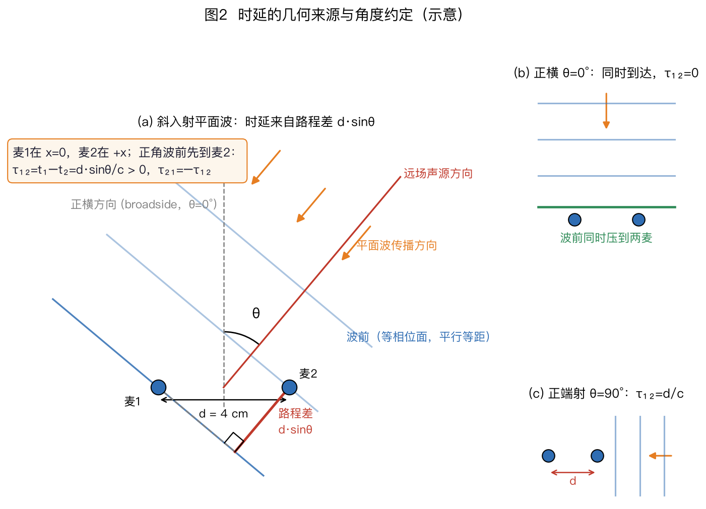
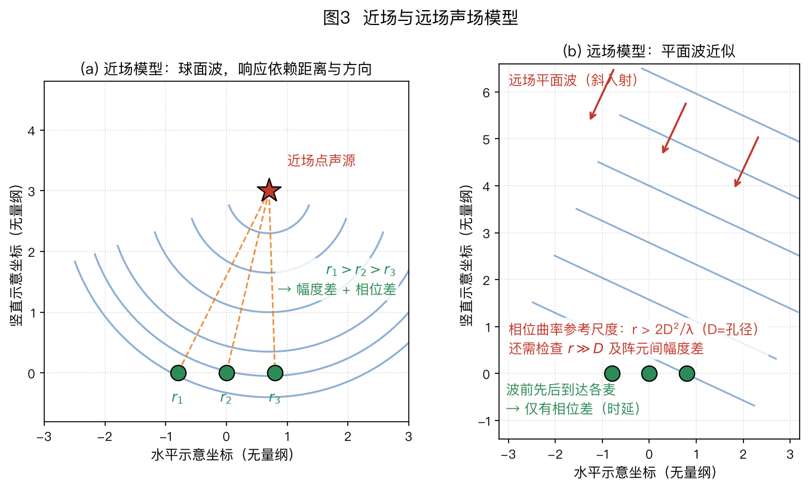
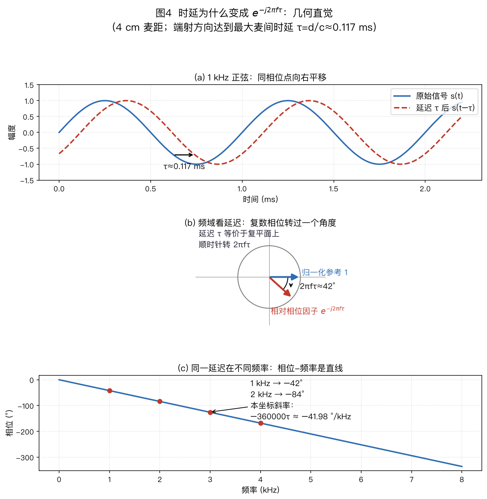
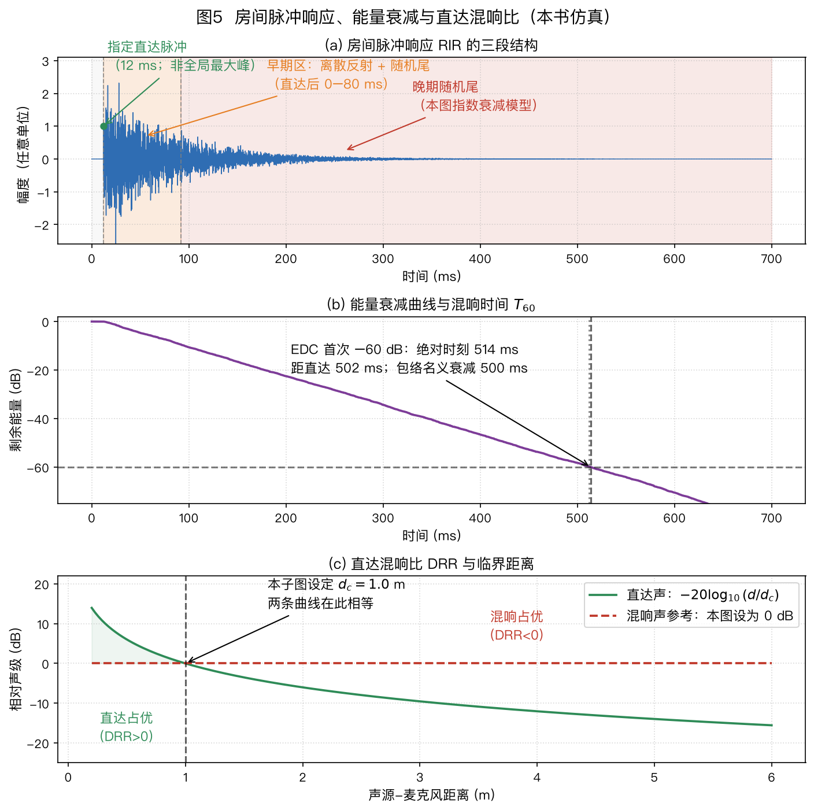
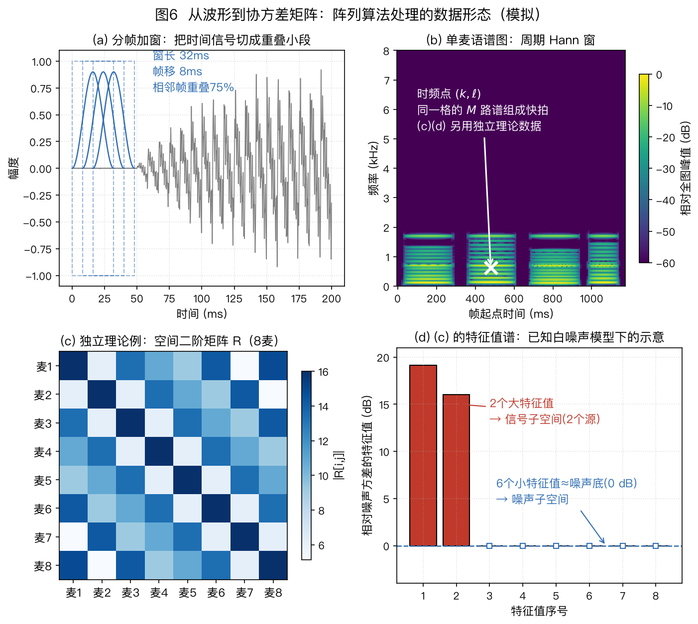
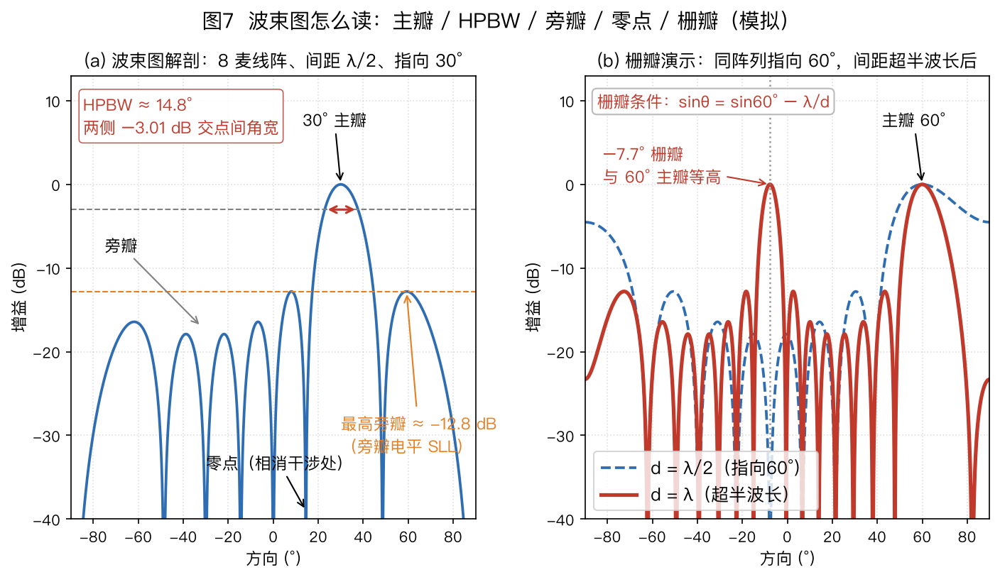
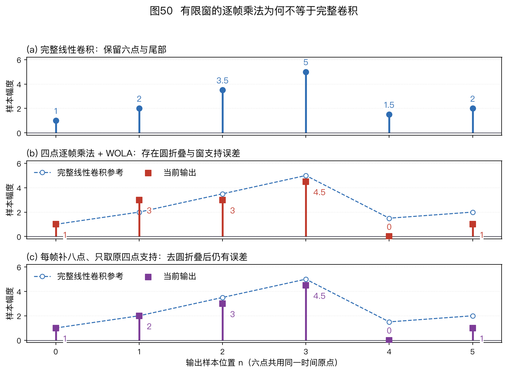

本页目录
⚠️ 本篇是教程正文第 2 章（正文共 11 章，另有两篇扩展专题和附录 A/B），可独立阅读，前后篇见下方导航。
🏠 首页导读：🏠 导读与导航 ｜ 上一篇：第 1 章 · 问题定义与双耳启示 ｜ 下一篇：第 3 章 · 阵列几何形态
2. 基础：声音到达阵列时发生了什么
2.1 核心事实：同一声音，到达各麦克风有先有后
本章沿着“距离差 → 时延 → 复数相位 → 多通道统计量 → 波束指标”学习。先检查几何和单位，再计算矩阵；房间反射与软件接口分别说明，避免把理想传播模型当成所有录音的真实情况。
2.1.1 先固定坐标与时差的正负
本书取声速 $c\approx343$ m/s，这是约 20°C 干空气中的常用近似；温度、湿度和气体成分改变时，声速也会改变。Cramer 1993 给出湿空气声速计算式及适用范围，JASA 93(5)。
两个相距 4 cm 的麦克风，当声音沿两麦连线的方向传来时，先到近麦、后到远麦，时差幅值最大，约为 $0.04/343\approx0.116$ ms。当声音垂直于连线传来时，两麦同时收到，时差为零。这个到达时间差称为到达时间差（Time Difference of Arrival，TDOA）。
坐标、方向和时差约定。 把麦 1 放在 $x=0$，麦 2 放在 $x=d>0$；正横方向为 $\theta=0°$，正角朝 $+x$、即麦 2 一侧。单位向量 $\vec u(\theta)$ 从阵列指向声源，声波实际传播方向为 $-\vec u$。到达时刻之差统一定义为 $\tau_{ij}=t_i-t_j$。
按这些约定，正角时波前先到麦 2，有 $t_2\lt t_1$，即 $\tau_{21}\lt 0$、$\tau_{12}>0$。
平面波下，麦 1 相对麦 2 的带符号路程差为 $d\sin\theta$（图2），所以带符号的麦对时差为
$$\tau_{12}=t_1-t_2=\frac{d\sin\theta}{c},\qquad \tau_{21}=-\frac{d\sin\theta}{c}\text{。}$$
其中 $d$ 为两麦间距（m），$\theta$ 为声源方向角，$c$ 为声速。只讨论大小时可写 $|\tau_{12}|=d|\sin\theta|/c$；不能把无符号“时差”直接代入需要方向的公式。
默认声源方位角约定：在本节的水平面内，$\theta$ 从正横方向（broadside，垂直于两麦连线的方向）起算，正角从 $+y$ 朝 $+x$。正横 $\theta=0°$ 时两麦同时收到波前，时差为零；端射方向（endfire，沿两麦连线）$\theta=\pm90°$ 时路程差幅值为 $d$、时差幅值最大。后文未另行定义的声源方位角沿用这一约定；三维俯仰角、阵元位置角和球谐坐标的角度分别在使用处定义。有些文献从阵列轴起算，此时关系写成 $\Delta\tau=d\cos\theta/c$。比较公式前应先统一角度零点和正方向；两种起算方式相差 90°。

图 2 中麦 1 位于左侧、麦 2 位于右侧。正角声源位于麦 2 一侧，波前先到麦 2；直角三角形给出 $\tau_{12}=d\sin\theta/c>0$。正横时差为零，端射时差幅值达到最大。
2.1.2 采样、同步与声速失配
离散化。 16 kHz 采样率下，采样间隔为 $1/16000=62.5$ μs，对应约 $343\times62.5\,\mu s\approx2.1$ cm 的传播距离。4 cm 阵列的最大时差约为 117 μs，不到两个采样间隔。仅按整数采样点定位会得到很粗的方向，因此实际系统需要亚采样 TDOA 估计，例如对互相关峰插值、对相关函数上采样，或在频域拟合相位斜率（见 §4.2）。
同步。 多路信号必须同步采样。同一设备可让多通道模数转换器（ADC，Analog-to-Digital Converter）共享时钟；分布式设备则有独立晶振。相对偏移为 50 ppm 时，1 小时累积约 $50\times10^{-6}\times3600=0.18$ 秒，远大于阵列所测的微秒级时差，因此需要时钟同步或采样率偏移补偿（§10.2）。
除了固定起始偏移，采样率误差还会使偏移随时间累积。共享时钟只能解决时钟来源问题，通道滤波、驱动缓存或接线次序仍应通过同一已知信号检查。幅度校准只校正灵敏度或单位，不会自动校正这些时间与相位差。
声速失配会直接变成角度偏差。示意地，若真实声速为 331 m/s、真实方向为 60°，系统却按 343 m/s 反算，则 $\hat\theta=\arcsin[(343/331)\sin60°]\approx63.8°$，偏差约 3.8°。这不是“331 m/s 对应某一固定气温”的断言，只用于隔离声速参数失配；实际系统应按工作环境估计或校准 $c$。
上式是 §2.3 远场向量模型的几何基础；式(2-1)将在那里给出。声源接近阵列时，波前曲率不能忽略，需要先区分近场与远场。
2.2 近场与远场
2.2.1 球面波与平面波各省略了什么
- 近场（声源很近）：波前（波阵面，即相位相同的面）是球面，各麦克风信号的时间和幅度都有差别；
- 远场（声源距离远大于阵列尺寸）：波前近似平面，各麦克风收到的是“同一个信号错开一些时间”，幅度几乎相同。
2.2.2 从路程误差推导相位容限
Fraunhofer 距离 $r_F=2D^2/\lambda$（$D$ 为阵列最大孔径、$\lambda$ 为波长）是常用的相位曲率尺度。这个等式针对以阵列中心对称的孔径：点声源位于中心法线上，最远阵元到中心的距离为半孔径 $a=D/2$，并以中心到该阵元的路程差不超过 $\lambda/16$ 为容限。
非中心对称阵列应直接使用从选定参考点到最远阵元的距离 $a$，得到 $r_F=8a^2/\lambda$。对其他方位，这个尺度只能作为起始检查，而不是精确边界。这项球面路程几何也用于电磁孔径测量；下列来源是电磁测量报告，并非麦克风阵列的声学验收标准。该 $\lambda/16$ 口径及几何推导见 ETSI ETR 273-1-1 条款 7.2.3.1（p.76）。
当 $r$ 大于该尺度，且同时满足下面展开所需的 $r\gg a$ 时，可以把球面波的相位近似为平面波。对实际拾音距离，还应检查阵列到声源的距离比、各阵元的幅度差，以及最高使用频率。
例如，7 cm 中心对称阵列在 1 kHz（$\lambda=0.343$ m）时的公式值是 $2\times0.07^2/0.343\approx2.9$ cm，但 2.9 cm 并不满足 $r\gg D$，不能据此宣称从 3 cm 开始整个房间都是远场。作为对照，1.26 m 的中心对称线阵在 1 kHz 下有 $r_F\approx9.3$ m，普通会议室内应核对球面波模型。
Fraunhofer 判据的推导：
- 球面波到达阵列中心与到达最远阵元的路程不一样。把中心到最远阵元的距离记作 $a$；中心对称阵列有 $a=D/2$。由勾股定理，额外路程是 $\sqrt{r^2+a^2}-r$。
- $r \gg a$ 时用近似 $\sqrt{1+x}\approx 1+x/2$ 展开：$\sqrt{r^2+a^2}-r \approx \dfrac{a^2}{2r}$。
- 本节选 $\lambda/16$（相位误差约 22.5°）作为示例容限：当球面弯曲造成的路程误差不超过它时，记作满足这项相位检查，即 $\dfrac{a^2}{2r} \le \dfrac{\lambda}{16}\;\Rightarrow\; r \ge \dfrac{8a^2}{\lambda}$。只有在 $a=D/2$ 时，这才化为 $r\ge\dfrac{2D^2}{\lambda}$。波束零陷等任务可能需要更小的误差容限，还须单独检查幅度差。
泰勒展开的中间步：先提出 $r^2$：$\sqrt{r^2+a^2}-r = r\left[\sqrt{1+x}-1\right]$，其中 $x=(a/r)^2$。当 $x\ll1$ 时，$\sqrt{1+x}\approx1+x/2$，因此路程差近似为 $r\cdot x/2=a^2/(2r)$。中心对称孔径代入 $a=D/2$ 后才得到 $D^2/(8r)$。
若不作展开，直接解 $\sqrt{r^2+a^2}-r\le\lambda/16$，平方并移项得到 $r\ge8a^2/\lambda-\lambda/32$；负的右端不构成额外距离限制。它只检验这组几何的相位误差。即使通过相位检查，距离比引起的幅度差仍可能很大，不能省略另一项检查。
Fraunhofer 距离是选定误差容限对应的尺度，不是声场突然改变的物理边界。
为何选 $\lambda/16$（22.5°）作为示例容限：路程误差 $\Delta$ 对应相位误差 $2\pi\Delta/\lambda$；当 $\Delta=\lambda/16$ 时，相位误差为 22.5°。若只看两路等幅信号、其中一路存在这项相位误差，归一化相干和的幅度为 $|1+e^{\mathrm j\pi/8}|/2=\cos(\pi/16)\approx0.981$，即约 −0.17 dB。$\lambda/16$ 是本节为了说明数量级采用的工程容限，不是普适常数；要求更深零陷或更小相位误差时，所需距离会更大。

图 3 对比两种波前：近场采用球面波模型，各通道同时存在传播时延和幅度差；远场近似为平面波，传播模型主要由方向决定。这是下一节远场向量模型的前提。
确定远场条件后，可以把麦克风之间的传播时延写成导向矢量。
2.3 信号模型：把“声音有先有后”写成数学
符号约定（全书通用）：标量用普通斜体，如 $s$、$\tau$、$\theta$、$\sigma^2$；向量用头顶箭头，如 $\vec{x}$、$\vec{a}$、$\vec{w}$（默认列向量，零向量记 $\vec{0}$）；矩阵用加粗大写，如 $\mathbf{R}$、$\mathbf{C}$、$\mathbf{\Gamma}$、$\mathbf{E}_n$。
再认几枚上标：$^H$ 是共轭转置（频域复数用）、$^\top$ 是转置（时域实数用）、$^*$ 是共轭、$^{-1}$ 是逆；$\hat{\ }$ 表示估计值，$\|\cdot\|$ 为范数、$|\cdot|$ 为幅度。
标量上标星号与向量上标 H：单个复数取共轭用上标星号（如 $X_2^*$），整列向量先转置再共轭用上标 H（如 $\vec{x}^H$）。读后面的公式时，先确认所操作的是单个复数还是整列向量。
大写谱值仍可为标量：语音文献习惯用 $X(f)$、$X(f_k,\ell)$ 这类大写字母表示某一物理频率或时频点上的复数谱值。它们是标量，不是矩阵；本书沿用这一惯例，并在首次出现处注明。
字母复用：受文献惯例所限，$k$ 可表示频点索引、波数或 WPE 的滞后帧号；$D$ 可表示阵列孔径或 PHD 强度函数；$\lambda$ 可表示波长、WPE 功率谱或矩阵特征值；$K$ 可表示声源数或 WPE 预测阶数；$s$ 可表示源信号或追踪状态。每个符号以所在公式的定义为准。
频率与帧索引：本章的连续频率统一记作 $f$，单位 Hz；DFT/STFT 的频点索引记作 $k$。实信号单边谱的 $0\le k\le\lfloor N/2\rfloor$ 对应 $f_k=kf_s/N$；完整 DFT 的高半区 $k>N/2$ 对应有符号频率 $(k-N)f_s/N$。帧索引记作 $\ell$。文献中常见的 $\vec x(f,t)$ 是简写，本书需要区分离散网格时写成 $\vec x(f_k,\ell)$。复指数 $e^{-\mathrm j2\pi f\tau}$ 中必须代入 Hz 频率 $f$ 或按频点范围正确映射的 $f_k$，不能直接代入无量纲索引 $k$。
§2.1 得到了各麦到达时刻之差。下面先写每路麦克风的波形，再把时延转成频域相位，最后将多路式子合成一个向量式。
2.3.1 时域：每个麦克风的相对时移
远场、单声源时，先把各麦相对麦 1 的到达时延定义为 $\tau_{m1}=t_m-t_1$。由 §2.1 的方向约定，
$$\tau_{m1}=-\frac{(\vec r_m-\vec r_1)^\top\vec u}{c}\text{。}$$
均匀线阵（Uniform Linear Array，ULA）的阵元依次沿 $+x$ 排列。正角声源下， $\vec r_m-\vec r_1$ 的 $x$ 分量为正，所以 $m>1$ 时 $\tau_{m1}\lt 0$：右侧麦更早收到。把麦 1 的到达时刻作为时间原点，第 $m$ 个麦克风（$m=1,2,\dots,M$）录到的信号为
$$x_m(t) = s(t - \tau_{m1}) + n_m(t)\text{。}$$
- $x_m(t)$：第 $m$ 路录音波形——这是你实际拿到的数据；下标 $m$ 表示“第几个麦克风”，$t$ 是时间；
- $s(t)$：麦 1 处的理想直达目标分量，源端到参考麦的公共传播延迟和幅度衰减已经吸收入其中。它不带下标 $m$，因为等幅远场模型把其余通道写成它的相对时移，而不是声源端原波形的直接副本；
- $\tau_{m1}$：第 $m$ 个麦相对麦 1 的带符号到达时延（秒），它由声源方向决定，可为负数；
- $n_m(t)$：第 $m$ 路的噪声。
时移位于 $s(t-\tau_{m1})$ 的自变量中。变换到频域后，它会成为可直接相乘的复相位因子。
2.3.2 频域：用变量代换得到相位因子
本书采用前向傅里叶变换 $X(f)=\int x(t)e^{-\mathrm j2\pi ft}\,\mathrm dt$。在此约定下，时移性质为
$$s(t-\tau)\ \xrightarrow{\mathcal{F}}\ S(f)\,e^{-\mathrm{j}2\pi f\tau}$$
箭头上的 $\mathcal F$ 表示傅里叶变换。将积分变量换成 $v=t-\tau$，就能核对负号来自哪里：
$$\begin{aligned} \int s(t-\tau)e^{-\mathrm j2\pi ft}\,\mathrm dt &=\int s(v)e^{-\mathrm j2\pi f(v+\tau)}\,\mathrm dv,\\ &=e^{-\mathrm j2\pi f\tau}\int s(v)e^{-\mathrm j2\pi fv}\,\mathrm dv. \end{aligned}$$
这里 $t=v+\tau$，所以指数中的时移项仍带负号；相对时延 $\tau\lt 0$ 时，得到的相位旋转自然为正。
左边表示时域延迟 $\tau$ 秒，右边表示频域中乘以复相位因子。频域形式便于把宽带信号分频点处理，也便于将卷积近似为乘法，因此许多阵列算法采用 STFT 实现；这种近似的边界见 §2.5。
这个 $e^{-\mathrm{j}2\pi f\tau}$ 到底是什么？它是复平面上一个长度为 1 的箭头：在正频率 $f>0$ 下，正时延 $\tau>0$ 使它从正实轴顺时针转过 $2\pi f\tau$，负时延 $\tau\lt 0$ 则使它逆时针旋转（图4(b)画的是正时延）。其中 $\mathrm{j}$ 是虚数单位（$\mathrm{j}^2=-1$）；$e$ 的复指数由欧拉公式定义：$e^{\mathrm{j}\phi} = \cos\phi + \mathrm{j}\sin\phi$；有些书把 $2\pi f$ 写成 $\omega$（角频率），两者是一回事。
可以用一个周期检查：若 $\tau=1/f$，相位转过整整一圈 $2\pi$；周期信号平移一个周期后与原波形重合，复相量也回到原位置。

图 4（b）把原谱值的相位选作零点，展示单位模长的相对相位因子，并不要求原始 $S(f)$ 总在正实轴上。图中画的是正时延示例：若声源位于麦 2 一侧的正端射方向，先到麦 2、后到麦 1，则 $\tau=\tau_{12}=d/c\approx0.1166$ ms；此时麦 1 相对麦 2 的波形右移约 0.117 ms。§2.3 的导向矢量改以麦 1 为参考，同一条件下使用的是 $\tau_{21}=-d/c$，相位旋转方向相反。
在图 4 的正时延例中，1 kHz 复相量顺时针旋转约 $2\pi\times1000\times0.1166\text{ ms}\approx42°$。相位以 rad、频率以 Hz 表示时斜率为 $-2\pi\tau$；图中的单位换成 °/kHz 后，斜率为 $-360000\tau\approx-41.98$ °/kHz，2 kHz 处约为 −84°。§4.2 的 GCC-PHAT 正是利用这项关系估计时延。
图 4（c）还说明，同一时延引起的相位旋转与频率成正比。相位以 rad、频率以 Hz 表示并展开后，直线斜率为 $-2\pi\tau$；实际数据中的相位缠绕、噪声和混响会使估计更复杂。
2.3.3 多通道：导向矢量与维度检查
对第 $m$ 路、物理频率 $f$，时移性质给出：
$$X_m(f) = e^{-\mathrm{j}2\pi f\tau_{m1}(\theta)}\,S(f) + N_m(f)\text{。}$$
- $X_m(f)$、$S(f)$、$N_m(f)$：第 $m$ 路/声源在物理频率 $f$ 处的复数谱值——都是标量（单个复数）；
- $e^{-\mathrm{j}2\pi f\tau_{m1}(\theta)}$：相对时延造成的相位旋转因子，也是标量。
把 $M$ 路的式子竖着摞起来。相对时延满足 $\tau_{m1}=-(\vec r_m-\vec r_1)^\top\vec u/c$，所以第 $m$ 个导向分量也可写为
$$a_m(f,\theta)=e^{-\mathrm j2\pi f\tau_{m1}} =e^{+\mathrm j2\pi f(\vec r_m-\vec r_1)^\top\vec u/c}\text{。}$$
于是
$$\begin{aligned} \underbrace{\begin{bmatrix}X_1(f)\\X_2(f)\\\vdots\\X_M(f)\end{bmatrix}}_{\vec x(f)} &=\underbrace{\begin{bmatrix}e^{-\mathrm j2\pi f\tau_{11}(\theta)}\\e^{-\mathrm j2\pi f\tau_{21}(\theta)}\\\vdots\\e^{-\mathrm j2\pi f\tau_{M1}(\theta)}\end{bmatrix}}_{\vec a(f,\theta)}S(f)\\ &\quad+\underbrace{\begin{bmatrix}N_1(f)\\\vdots\\N_M(f)\end{bmatrix}}_{\vec n(f)}\text{。} \end{aligned}$$
每一行就是上面那个标量式子；把公共的 $S(f)$ 提到列向量外面，就得到全书最常用的紧凑形式：
$$\vec{x} = \vec{a}(\theta)\,s + \vec{n}\text{。}\tag{2-1}$$
- $\vec{x}$：$M\times1$ 复数列向量，$M$ 为麦克风数量；
- $\vec{a}(\theta)$：导向矢量（steering vector），描述声源位于 $\theta$ 方向时各麦克风相对麦 1 的相位；
- $\theta$：声源方向，也是定位时想求的量；
- $s$：该频点的声源谱，是标量，即上面逐行式子中的 $S(f)$；
- $\vec{n}$：$M\times1$ 复数噪声向量。
维度检查：$\vec a$ 为 $M\times1$，乘一个标量 $s$ 后仍为 $M\times1$，才能与 $\vec n$ 相加。导向分量无量纲；$s$ 与各路谱值使用相同单位和傅里叶归一化。
式(2-1)省略了频点自变量 $(f)$，下文沿用此简写。在本节的等幅远场模型中，$\vec{a}(\theta)$ 每个分量的模长为 1，分量差异来自相对时延 $\tau_{m1}(\theta)$。定位算法可用候选方向的导向矢量解释观测，波束形成器则用它规定目标方向响应；近场或含散射时还要加入距离和幅度项。
手算一遍：3 麦 ULA 的麦 1、2、3 依次位于 $x=0,4,8$ cm；声源位于正角 30°，$f=1$ kHz。
相邻麦的 $\tau_{m1}$ 变化量为 $-d\sin30°/c\approx-58.3$ μs，所以相邻导向相位变化为 $-2\pi f(-58.3\,\mu\mathrm s)\approx+0.366$ rad，即约 +21°。因此
$$\vec a=[1,e^{+\mathrm j0.366},e^{+\mathrm j0.733}]^\top\text{。}$$
时域解释是麦 2 比麦 1 早 58.3 μs。在本书的傅里叶约定下，较早到达对应相对麦 1 的正相位。
混响：实际房间中麦克风收到直达声与多条反射路径的叠加，即声源与房间脉冲响应（Room Impulse Response，RIR）的卷积。$T_{60}$ 描述混响尾的衰减时间；下一节给出定义、计算和适用边界。
直达声模型明确后，§2.4 再加入房间反射，说明混响会怎样改变观测。
2.4 房间声学：混响到底是怎么来的
房间脉冲响应说明反射怎样进入录音，混响时间描述拖尾的衰减，直达混响比描述两种能量的相对大小。以下分别建立这三个量，再说明怎样仿真和测量。
2.4.1 房间脉冲响应与早晚反射
房间脉冲响应（Room Impulse Response，RIR）：RIR 是房间和收发位置固定时，系统对理想单位冲激的响应。在线性、时不变近似下，麦克风信号等于声源信号与 RIR 的卷积。
先用离散模型把“叠加”写清。令 $u[n]$ 为声源端数字信号，$h_m[q]$ 为第 $m$ 路的离散 RIR，长度为 $Q$，则
$$\begin{aligned} x_m[n]&=\sum_{q=0}^{Q-1}h_m[q]u[n-q]\\ &\quad+n_m[n]\text{。} \end{aligned}\tag{2-2}$$
$h_m[q]$ 的每个非零抽头都产生一份延迟 $q$ 个采样点、再乘相应增益的副本。本式使用数字输入输出约定，$h_m[q]$ 是离散滤波增益；实测声学传递函数的单位还取决于播放参考和麦克风校准。声源端 $u[n]$ 与 §2.3 已吸收公共传播的参考麦目标 $s$ 不同，不能悄悄互换。E02-15 用六个输出样本逐项复算。
拍手录音可以粗略显示直达声和衰减尾，却不是严格的 RIR：拍手本身有有限时长和频谱，麦克风响应也会进入录音。要得到可用于计算的 RIR，通常播放已知测试信号并反卷积，测量方法见本节末。
RIR 可按图5(a)作教学性分段：
- 直达声：从声源直接到达；在直达路径未被遮挡且传播模型成立时，它提供声源方向的几何线索；
- 早期反射：直达声后较早到达、仍能分辨出路径结构的反射。图5(a)用直达后 80 ms 作示意分界；音乐清晰度常用的 $C_{80}$ 和语音清晰度常用的 $C_{50}$，分别以直达后 80 ms 和 50 ms 为早期能量的积分分界，见 Lee 等，JASA 2018，引言与式(1)。这不是早、晚反射的普适物理边界，80 ms 内的反射次数也取决于房间尺度和路径。早期反射可能增加响度，也会模糊方向线索；
- 晚期混响：经多次反射后形成的弥散尾音。统计建模时，常把充分弥散的晚期混响近似为各向同性声场；这个近似适合分析波束形成器的 DI（指向性指数，§2.6），但不表示混响在时间上就是独立白噪声。WPE（第 7 章）正是利用晚期混响仍有时间相关性来做预测消除。

图 5（a）中，12 ms 的指定直达抽头为 1；随机反射尾从直达之后就存在，并叠加四条离散早期反射，92 ms 是教学分段位置，不是随机尾的启动点。直达抽头也不必是整条 RIR 的最大峰。图 5（b）用能量衰减 60 dB 所需时间定义 $T_{60}$；图 5（c）固定 $d_c=1.0$ m，展示直达声与混响声的相对声级怎样随声源—麦克风距离变化。该子图是归一化示例，不直接给出体积或混响时间不同的房间结果。
2.4.2 混响时间：从吸声量算衰减
$T_{60}$ 与赛宾公式。$T_{60}$ 是声能衰减 60 dB 所需的时间（图5(b)），可用赛宾（Sabine）公式估算。历史原始资料可查 Wallace C. Sabine, Collected Papers on Acoustics（Harvard University Press，1922）中的“Reverberation”（始于第 3 页）；下面的五步是本书按扩散场和弱吸收假设所作的推导，不是原书推导的逐字复述。原书书目与目录。实测时要按空间类型选标准：ISO 3382-1:2009面向演出空间，ISO 3382-2:2008面向普通房间：
$$\begin{aligned} T_{60}&=\frac{0.161\,V}{A},\\ A&=\sum_i S_i\alpha_i\text{。} \end{aligned}\tag{2-3}$$
$V$：房间体积（m³）；$S_i$、$\alpha_i$：第 $i$ 个表面的面积与吸声系数（理想能量吸收比例，0 表示不吸收，1 表示全部吸收）。
实际材料的吸声系数随频带、入射条件和测量方法变化，不能把某种瓷砖或窗户固定等同于 0 或 1。$A$ 是等效吸声面积，单位 m²；它不等于墙面总面积。
算例（本例是参数演示，不代表某类房间的通用测量值）：房间尺寸取 5 m × 4 m × 2.8 m，故 $V=56$ m³；再假设各表面的赛宾吸声量合计为 $A=18$ m²，则 $T_{60}=0.161\times56/18\approx0.50$ s。改变表面材料或摆设会改变 $A$，因此同尺寸房间也可能得到不同结果。
这个公式怎么推出来的（五步，能量守恒 + 一个几何事实）：
- 模型：混响期的声能在房间里近似均匀分布（扩散场假设），声线不断撞墙，每撞一次被吸收掉一部分；
- 几何事实：声线在房间中平均飞行 $\ell_{\rm mfp} = \dfrac{4V}{S}$ 米撞一次墙（统计几何的经典结果，$S$ 是所有墙面的总面积）。直觉检验：房间越大飞得越远、墙越多撞得越勤，都对得上；
- 每秒能量损失率：撞墙频率 $= \dfrac{c}{\ell_{\rm mfp}} = \dfrac{cS}{4V}$（次/秒），每次损失能量比例 $\bar\alpha$（平均吸声系数），于是每秒损失率 $= \dfrac{cS\bar\alpha}{4V} = \dfrac{cA}{4V}$；
- 列方程求解：$\dfrac{\mathrm{d}E}{\mathrm{d}t} = -\dfrac{cA}{4V}E$——“损失率正比于当前能量”的方程，解是指数衰减 $E(t) = E_0\,e^{-\frac{cA}{4V}t}$；
- 代入定义收尾：$T_{60}$ 是能量衰减 60 dB 的时间——注意 60 dB 是能量比 $10^6$（不是 $10^3$：能量的 dB 用 $10\log_{10}$，$10\log_{10}10^6 = 60$）。令 $e^{-\frac{cA}{4V}T_{60}} = 10^{-6}$，取对数得 $\frac{cA}{4V}T_{60}=6\ln10$。因此
$$\begin{aligned} T_{60}&=\frac{24\ln10}{c}\frac VA,\\ &\approx\frac{55.3}{343}\frac VA \approx0.161\frac VA\text{。} \end{aligned}$$
平均自由程中的因子 4：在声线方向各向同性、房间为凸体的假设下，墙面对各方向的平均投影面积是总表面积的 $1/4$。因此单位体积内声线单位时间的墙面碰撞率为 $cS/(4V)$，两次碰撞间的平均距离为其传播距离形式的倒数 $\ell_{\rm mfp}=4V/S$。量纲检查：$V/S$ 是长度；立方房间边长为 $L$ 时，$\ell_{\rm mfp}=4L^3/(6L^2)=2L/3$。
常数 0.161 的来源：$24\ln10\approx55.26$；取声速 $c=343$ m/s，$55.26/343\approx0.161$。其中 $6\ln10$ 来自 60 dB 的能量比，几何平均路径项再带来因子 4。
适用边界：推导用了“扩散场 + 弱吸收”假设。平均吸声系数不再很小时，赛宾的一阶近似会逐渐偏离，在相应的扩散场假设下可比较 Eyring 公式 $T_{60} = \dfrac{-0.161V}{S\ln(1-\bar\alpha)}$（形式极限检查：$\bar\alpha\to1^-$ 时 Eyring 趋于零，赛宾仍趋于非零值；$\ln0$ 本身未定义，全吸收条件下扩散场模型也已失去前提）。
这里不设一个适用于所有房间的硬阈值；应按频带、声场扩散程度和测量标准核对。公式来源见 Eyring 1930 原论文。
2.4.3 直达混响比与临界距离
直达混响比（Direct-to-Reverberant Ratio，DRR）比较同一声源的直达分量与混响分量能量：$\mathrm{DRR}=10\log_{10}(E_{\rm direct}/E_{\rm reverberant})$ dB。DRR 为正表示直达能量较大，为负表示混响能量较大。
两项能量须来自同一次声学条件与相同频带、幅度参考；直达窗与混响窗的各自边界也要说明。有限 dB 值要求两项能量都为正；只有混响能量为零时，比值取正无穷的边界，只有直达能量为零时取负无穷，二者都为零则没有可定义的比值。图 5（c）采用下述理想扩散场模型，真实房间的直达与反射分界仍要按测量方法确定。
直达声随距离按平方反比衰减（每远一倍弱 6 dB），而理想扩散场中的晚期混响能量密度近似不随位置变化。两者相等的位置称为临界距离 $d_c$：
$$d_c \approx 0.057\sqrt{\frac{V}{T_{60}}}\ \text{(m)}\text{。}\tag{2-4}$$
（此式默认声源全向辐射，即指向性因子 $Q=1$；若声源有指向性（如人声朝前更响），把 $Q$ 乘进根号内的分子：$d_c \approx 0.057\sqrt{QV/T_{60}}$。）
临界距离公式的推导（四步）：
-
求直达声能量密度。 全向声源的功率 $W$ 均匀分布在半径 $r$ 的球面上，声强为 $I_d=W/(4\pi r^2)$，单位是 W/m²。对向外传播的波作局部平面波近似，再除以声速，得到能量密度 $E_d=I_d/c=W/(4\pi r^2c)$，单位是 J/m³。
-
求混响声能量密度。 房间里的混响能量不断被墙面吸收，又不断由声源补充。稳态扩散场中有 $E_r=4W/(cA)$。$A$ 是赛宾吸声量，模型把 $E_r$ 视为不随位置变化。下面的说明框解释分子中的 4。
-
令两种能量密度相等。 在临界距离 $r=d_c$ 处，$E_d=E_r$。代入上面两式，消去共同的 $W$ 和 $c$，解得：
$$\begin{aligned} \frac{W}{4\pi d_c^2c}&=\frac{4W}{cA},\\ \frac{1}{4\pi d_c^2}&=\frac4A,\\ d_c^2&=\frac{A}{16\pi}\text{。} \end{aligned}$$
-
代入赛宾公式。 由 $T_{60}=0.161V/A$ 得 $A=0.161V/T_{60}$。代入上一步，最后才开平方：
$$\begin{aligned} d_c&=\sqrt{\frac{0.161V}{16\pi T_{60}}},\\ &=\sqrt{0.00320\,\frac{V}{T_{60}}},\\ &\approx0.057\sqrt{\frac{V}{T_{60}}}\ \text{m}\text{。} \end{aligned}$$
这里把 $V$ 的数值按 m³、$T_{60}$ 的数值按 s 代入，结果才按 m 读取；写成带量纲的等式时，赛宾常数 $0.161$ 的单位是 s/m。
可跳过：弥散能量式中 4 从哪里来（$4W/(cA)$）：稳态能量平衡是“注入功率 $=$ 吸收功率”。若房间内各处的混响能量密度近似相同，记为 $E$，就需要算出墙面每秒吸收多少能量。
各向同性声场并非全部朝墙面运动：只有朝向墙面的方向分量提供入射能流。对入射半球的方向作投影平均，墙面接收的能流为 $Ec/4$；再乘等效吸声面积 $A$，吸收功率为 $EcA/4$。这个 $1/4$ 与上面平均自由程中的因子 4 来自同一各向同性投影。
令吸收功率 $EcA/4$ 等于声源注入功率 $W$，解得 $E=4W/(cA)$。这里的 $E$ 是理想扩散场的能量密度，不是某条反射路径的能量。
常数 0.057 的来源：$0.161/(16\pi)\approx0.003203$，再开平方得到 $0.0566\approx0.057$。因此该常数同时包含赛宾公式中的 0.161 和球面扩散项 $16\pi$。
把同一个房间的量连起来。 沿用 5 m × 4 m × 2.8 m 的矩形房间。六个面的总面积是 $S=2(5\times4+5\times2.8+4\times2.8)=90.4$ m²；因此 $A=18$ m² 对应面积加权平均吸声系数 $\bar\alpha=A/S\approx0.1991$。下面只比较同一组理想参数，不把它们当作实测房间结果。
| 要计算的量 | 代入步骤 | 本书计算结果 |
|---|---|---|
| Sabine 混响时间 | $0.161\times56/18$ | 0.5009 s |
| Eyring 混响时间 | $-0.161\times56/[90.4\ln(1-18/90.4)]$ | 0.4492 s |
| 全向源临界距离，$Q=1$ | $\sqrt{18/(16\pi)}$ | 0.5984 m |
| 目标方向声源指向性因子 $Q=4$ 时的临界距离 | $\sqrt{4\times18/(16\pi)}$ | 1.1968 m |
两种混响时间的差别来自吸收模型：$-\ln(1-\bar\alpha)\approx0.2220$，比一阶量 $\bar\alpha\approx0.1991$ 大，因而 Eyring 预测衰减较快。它们都依赖弥散场假设，不能只因某个结果较短就认定更接近这个房间的真实值。
表中临界距离仍按本节弱吸收、稳态扩散场的能量平衡计算，没有把 Eyring 时间直接代回由 Sabine 推出的式(2-4)。$Q$ 描述声源在所看方向的直达辐射相对全向源的增强；平方根使 $Q$ 增至四倍时 $d_c$ 增至两倍。式(2-4)里 0.057 是舍入常数，用它复算可能得到稍有差别的末位。
临界距离是模型中直达与混响能量相等的位置，既不是设备保证的拾音距离，也不是越过后就无法识别语音的边界。实际拾音还取决于源声级、噪声、麦克风及算法。
图 5（b）的指数包络把名义 $T_{60}$ 设为 0.5 s；加入固定随机尾和早期反射后，Schroeder 剩余能量积分曲线首次到达 −60 dB 的录音时刻约为 0.514 s。减去直达声的 0.012 s，到达后经过约 0.502 s。名义 0.5 s 的时间长度应从直达起算，对应录音时刻 0.512 s；不能把传播前的静音也算作衰减。该固定随机样例的实现衰减与名义参数有差别。
这里直接寻找 −60 dB 交点，只用于核对这条合成曲线。实测应按场所选择 ISO 3382 的相应分册；ISO 3382-2:2008 §3.5、§6把 $T_{20}$ 与 $T_{30}$ 分别对应于衰减曲线的 −5～−25 dB 和 −5～−35 dB 评价区间，并据该区间斜率外推到 60 dB。ISO 26101-2:2024 §3.1 注 2 的公开预览也转引这一定义；它是这里的公开核对资料，不替代房间混响时间测量所用的 ISO 3382 分册。
图 5（c）是设定 $d_c=1.0$ m 的归一化示例。在该模型中，3 m 处的 DRR 为 $-20\log_{10}(3/1)\approx-9.5$ dB，表示混响能量高于直达声；这个数不能外推到未测量的房间。实际 $d_c$ 还随体积、吸声量和声源指向性变化。
DRR 可作为距离估计的声学线索，但必须同时考虑房间和声源指向性。在上述线性模型中，直达声与混响声能量都正比于声源功率 $W$，两者相除后 $W$ 抵消，因此只把声源整体调大并不会改变 DRR。若从含噪或发生削波的录音估计 DRR，测得的比值还可能受噪声和非线性影响。
2.4.4 仿真与实测房间脉冲响应
仿真怎么造混响：镜像法（Image Method，镜像声源法）把墙面反射等效为镜像声源的叠加，算法定义见 Allen 与 Berkley 1979 原论文。开源库 pyroomacoustics 可生成给定房间和阵列的 RIR；本书固定链接到 pyroomacoustics 0.10.0 的 PyPI 发布页，示例接口以该版本为准。不同版本的接口、默认值或依赖可能变化，复现时应记录实际安装版本。
反过来，怎么实测一个房间的混响：拍手或爆破气球后观察衰减只能作粗略估计。更可控的做法是指数正弦扫频（Exponential Sine Sweep，ESS）：播放频率指数上升的已知扫频，录音后用相应逆滤波器反卷积得到 RIR，方法见 Farina 2000，AES Convention Paper 5093，原作者全文 §2；AES 正式出版记录给出论文书目信息。
在系统近似时不变、没有削波且扫频长度足够时，ESS 可将若干谐波失真成分与线性 RIR 在反卷积结果中分开。环境噪声、削波、时变非线性和播放／录音链路的频响仍会影响测量。E02-19 从四点数字例子展开反卷积的目标、正则偏差和完整尾部，再用已知 FIR 与扫频音频核对；数字控制不替代一次实际测量。
无法播放测试音时，也可研究从普通语音盲估房间参数，但不同参数需要不同模型。两麦相干函数可用于估计直达－弥散比，不能仅凭一个比值直接得到 $T_{60}$；后者还需要衰减形态或混响统计模型。
镜像仿真也要区分能量吸收系数 $\alpha$ 与理想幅度反射系数 $\sqrt{1-\alpha}$。由赛宾公式反求的材料参数与反射阶数只是仿真配置，生成后仍要测量衰减曲线。ESS 实测则应保留播放参考、扫频频带、录音尾长、噪声底和反卷积设置；本书合成 RIR 不能替代一次实际测量。固定版本的源码入口、声速与测量接口差异见空间处理研究手册。手册也提供 2025 年高精度声速模型的研究导航；本章手算仍统一采用 $c\approx343$ m/s，不能不记录环境参数就把另一个模型值代入比较。
房间传播模型解释了麦克风信号的组成。算法实现还需要把连续波形组织成 STFT、快拍和协方差矩阵。
2.5 数据怎么组织：STFT、快拍与协方差矩阵
后面的算法反复出现三个词——STFT、快拍、协方差矩阵，先在这里一次讲清。
2.5.1 从波形到逐频点的短时谱
短时傅里叶变换（Short-Time Fourier Transform，STFT）把波形切成重叠短帧，每帧加窗后做快速傅里叶变换（Fast Fourier Transform，FFT），得到时间—频率复数网格。每个网格点同时包含幅度与相位；图 6（b）这样的语谱图只把其中的幅度或功率画成颜色，相位没有直接显示。
增强或波束示例可用 32 ms 窗、8 ms 帧移；自动语音识别（Automatic Speech Recognition，ASR）中的 Kaldi 官方 MFCC 特征提取示例给出典型的 25 ms 帧长、10 ms 帧移。这是一个具体实现的示例，并非所有 ASR 前端的固定参数。比较文献时应核对采样率、窗函数、窗长和帧移。
令 $g[q]$ 为长度 $N_w$ 的实窗，$H$ 为帧移采样点数，$N\ge N_w$ 为 FFT 点数；这里先用不居中、从零开始的帧索引 $\ell$。本书前向 FFT 不除以 $N$：
$$\begin{aligned} z_{m,\ell}[q]&=x_m[\ell H+q]g[q],\\ X_m[k,\ell]&=\sum_{q=0}^{N_w-1}z_{m,\ell}[q]e^{-\mathrm j2\pi kq/N},\\ f_k&=\frac{kf_s}{N},\qquad 0\le k\le\lfloor N/2\rfloor\text{。} \end{aligned}\tag{2-5}$$
$z_{m,\ell}[q]$ 是乘窗后的帧内样本；$x_m$ 是第 $m$ 路实波形，$X_m[k,\ell]$ 是一个复数；$q$ 是窗内采样点编号，$k$ 是频点编号。完整 DFT 的 $k=0,\ldots,N-1$；实输入可只保存 $k=0,\ldots,\lfloor N/2\rfloor$，由共轭对称补回负频率。若保留完整 DFT，则 $k>N/2$ 对应 $(k-N)f_s/N\lt 0$；偶数长度的 Nyquist 点 $k=N/2$ 在单边实谱中记作 $+f_s/2$，与负频率端是同一个采样频点。居中或末端补齐时，先扩展输入序列，再使用相同求和式。窗外样本与尾部补入的零不能算作新观测。
本书教学接口取 $N_w=N$；讨论窗长与 FFT 补零时才分别使用两个量。周期 Hann 窗是 $g[q]=\tfrac12-\tfrac12\cos(2\pi q/N_w)$。E02-13 用四点窗列出乘窗、复谱和重构分母，帮助检查实际数组中的每个数字。
STFT 把宽带语音分解为一组近似窄带问题。时延 $\tau$ 对应的相位旋转 $2\pi f_k\tau$ 随频率变化，因此第 $k$ 个频点要使用自己的 $\vec a(f_k,\theta)$。
对直达场，在每个时频点写 $\vec{x}(f_k,\ell)\approx\vec{a}(f_k,\theta)s(f_k,\ell)+\vec n(f_k,\ell)$ 仍需窄带近似。加入房间反射后，乘法模型的通道因子应来自房间传递函数，不能继续把它解释成只有几何时延的单位模长导向。
完整傅里叶变换把时不变卷积精确变成乘法；有限窗的 STFT 则一般还包含跨帧与跨频带项。先卷积再截窗，与先截窗再卷积，可能把同一个输入样本乘上不同窗系数，也可能遗漏窗外的输入贡献。省略这些项后，才得到当前帧的逐频点乘法近似；是否采用直达导向还是含反射的相对传递函数，是另一项模型选择。E02-16 用完整时域卷积、四点帧内循环卷积和补零后的帧内线性卷积逐样本比较。
长房间响应、过短窗或频率变化过快时误差更大。第 4、5 章逐频点处理时，需把窗长与有效冲激响应长度纳入验证。跨帧项与跨带项分别表示时间帧之间、频率通道之间的耦合，不能混为一项；推导可参阅 Avargel 与 Cohen 2007，印刷 p.1307、§II，式(7)～(11)。
STFT 分帧数字例子：阵列配置为 4 麦常规小间距，采样率 16 kHz、窗长 32 ms、帧移 8 ms。
- 窗长为 $16000\times0.032=512$ 点，FFT 常用 512 点。
- 帧移为 $16000\times0.008=128$ 点，相邻帧重叠率为 $(512-128)/512=75\%$。
- 不在信号两端补零、只取完整窗时，1 s 语音共有 $\lfloor(16000-512)/128\rfloor+1=122$ 帧。
- 每帧实 FFT 保存 257 个单边频点（0～8 kHz），相邻频点间隔为 $16000/512=31.25$ Hz。
这个 31.25 Hz 是 DFT 网格间隔，不等于能分开两条相邻谱线的频率分辨能力；后者还取决于窗函数的主瓣宽度等条件。Harris 1978详细讨论了窗函数对谱分析的影响。
分帧还要单独指定端点策略。本书 spectral.py 的默认设置 center=True 会在两端各补半窗，并把末端补到完整帧，因此同一段 1 s 信号得到 126 帧；设为 center=False 时，本例才得到 122 帧。一般长度若不能恰好覆盖，代码仍会补齐末帧，不能直接套用只取完整窗的向下取整式。
信号端点补零会改变帧数；固定一帧后，把 FFT 从 512 点补到 1024 点则只加密频率网格，两者不是同一个操作。外部接口也应分别检查端点扩展和末尾补齐设置，见 SciPy STFT 的 boundary 与 padded 定义。从单边 FFT 换算功率还须处理正负频率配对、DC/Nyquist 端点与原样本长度，完整手算见 E02-08。
按上述不补端点、只取完整窗的口径，1 s、4 麦录音展开为 $122\times257=31354$ 个时频点，每个点上有一个 4 维快拍向量。这就是后文协方差矩阵 $\hat{\mathbf{R}}(f_k)$ 在每个频点上平均的对象，每个频点有 122 个快拍参与平均。
2.5.2 从多通道快拍到空间二阶矩
快拍（snapshot，快照向量）：固定频点索引 $k$、取第 $\ell$ 帧，把 $M$ 个麦克风在该时频点 $(f_k,\ell)$ 的复数谱排成列向量 $\vec{x}(f_k,\ell)$，就是一个快拍——相当于阵列在某一短帧拍下的一张“空间照片”（图6(b) 里标的那个格子就是它）。
空间二阶矩（阵列文献常称空间协方差矩阵）：单张快拍只给一次观测。固定频点，收集 $L$ 个快拍后对外积求平均：
$$\begin{aligned} \vec x_\ell&=\vec x(f_k,\ell),\\ \hat{\mathbf R}(f_k)&=\frac1L\sum_{\ell=1}^{L}\vec x_\ell\vec x_\ell^H\text{。} \end{aligned}\tag{2-6}$$
式(2-6)没有减去样本均值，严格说是未中心化的样本二阶矩；总体均值为零，只能保证总体二阶矩与总体协方差相等，不能保证有限一批快拍的样本均值恰为零。阵列文献常把两者都简称为空间协方差，使用实现或论文时要核对其定义。
把当前频点的样本均值写为 $\bar{\vec x}=L^{-1}\sum_\ell\vec x_\ell$。采用同一个分母 $L$ 时，中心化矩阵与未中心化矩阵之间满足
$$\begin{aligned} \hat{\mathbf C}_L&=\frac1L\sum_{\ell=1}^{L}(\vec x_\ell-\bar{\vec x})(\vec x_\ell-\bar{\vec x})^H,\\ \hat{\mathbf R}&=\hat{\mathbf C}_L+\bar{\vec x}\bar{\vec x}^{H}\text{。} \end{aligned}\tag{2-7}$$
展开乘积后，两项线性交叉项都利用 $L^{-1}\sum_\ell\vec x_\ell=\bar{\vec x}$ 合并，得到第二行。只有本批 $\bar{\vec x}=0$ 时，两种矩阵才相等。独立同分布、均值未知且 $L>1$ 时，常用分母 $L-1$ 得到无偏协方差估计；它还多一个 $L/(L-1)$ 因子。E02-14 把这三个结果分开复算。
$\hat{\mathbf{R}}$ 是 $M\times M$ 的复数矩阵，第 $m,n$ 个元素记录麦 $m$ 与麦 $n$ 在该频点上的相关幅度与相位差。Capon、MVDR、MUSIC 都以它为输入；MUSIC 再用特征分解把观测空间分成信号子空间和噪声子空间。
先用一帧两麦数据看清矩阵中的四个数。若该频点的快拍为 $\vec x=[1,2\mathrm j]^\top$，则它的外积是
$$\vec x\vec x^H=\begin{bmatrix}1&-2\mathrm j\\2\mathrm j&4\end{bmatrix}\text{。}$$
对角线上的 1 和 4 是两路谱值的模平方，因而都是非负实数；右上角的 $-2\mathrm j$ 与左下角的 $2\mathrm j$ 互为共轭，记录这帧的跨通道相位关系。这只是单帧外积，秩为 1；式(2-6)还要把同频点的多帧外积平均，才能估计该时间段的空间二阶矩。
先检查总体模型中的交叉项。 固定当前频点，令 $\vec x=\mathbf A\vec s+\vec n$；$\mathbf A$ 为 $M\times K$ 导向矩阵，$\vec s$ 为 $K\times1$ 源谱向量。定义 $\mathbf R_{ss}=\mathbb E[\vec s\vec s^H]$、$\mathbf R_{nn}=\mathbb E[\vec n\vec n^H]$ 和 $\mathbf C_{sn}=\mathbb E[\vec s\vec n^H]$，其中 $\mathbf C_{sn}$ 是 $K\times M$ 矩阵。展开 $\mathbb E[(\mathbf A\vec s+\vec n)(\mathbf A\vec s+\vec n)^H]$ 时，除了源项和噪声项，还有 $\mathbf A\mathbf C_{sn}+\mathbf C_{sn}^H\mathbf A^H$，完整式见式(2-22)。
常用模型显式假设 $\mathbf C_{sn}=\mathbf0$，使这两项分别为零。对零均值源与噪声，这就是二阶不相关；独立且零均值是充分条件。噪声为空间白噪声只约束 $\mathbf R_{nn}=\sigma^2\mathbf I$，不约束它与源的交叉项。E02-17 给出空间白噪声仍能抵消源二阶矩的反例。
因此，只有在窄带远场模型正确、$K\lt M$、导向矩阵列满秩、当前频点源二阶矩满秩、源与噪声满足 $\mathbb E[\vec s\vec n^H]=\mathbf0$、噪声为空间白噪声且快拍足够多时，才可把高于噪声底的 $K$ 个特征值解释成 $K$ 个有效源分量。相干反射、空间有色噪声、有限快拍和阵列失配都会破坏这种分组。
这里的“白”按当前频点的跨通道统计定义。噪声随频率有不同功率 $\sigma^2(f)$，仍可能在每个频点满足空间白模型；时间谱有颜色不自动意味着空间相关。源的时间谱有颜色也不必然使本频点模型失效，但某源在该频点功率为零，或多个源完全相干使 $\mathbf R_{ss}$ 降秩时，可见的信号维数会少于物理声源总数。

图 6（a）（b）来自 16 kHz、1.2 s 的单通道数学合成谐波信号，随机种子 6001，使用 512 点周期 Hann 窗、128 点帧移。横轴标帧起点；颜色表示 $20\log_{10}(|S|/\max|S|)$，相对全图最大幅度显示 −60～0 dB，不是校准声压级。选中的是零起点第 60 帧、第 20 频点，即 480 ms 与 625 Hz。
图 6（c）（d）为独立理论例：8 麦半波线阵、方向 −20° 与 30°、两个互不相干源功率为 10 与 5、空间白噪声方差为 1，并假设源与噪声不相关，因此 $\mathbf R=\mathbf A\operatorname{diag}(10,5)\mathbf A^H+\mathbf I$。它没有从（a）（b）累积快拍，也没有进行有限样本源数估计。
图 6（c）只画 $|R_{ij}|$，相位仍包含在复数 $R_{ij}$ 中但未在图上显示。图中 $(k,l)$ 依次表示频点索引和帧索引；正文用 $\ell$ 代替容易与数字 1 混淆的字母 $l$，对应物理频率为 $f_k$。
图中的两个较大特征值依赖上述完整模型条件，不能只看到两个高峰就省略源与噪声不相关、空间白噪声及可辨识性检查。
协方差估计的两个细节：
- 快拍数太少时，$\hat{\mathbf{R}}$ 的估计方差增大，小特征值也会明显波动。这是 Capon/MVDR 使用对角加载（§5.4）的原因之一。
- 帧移小、相邻帧高度重叠时，快拍通常相关，不能把帧数直接代入假设独立观测的方差公式。
其中 $L$ 是参与平均的快拍数，$\ell$ 是快拍（帧）索引。快拍不够时会发生什么（处理方法见 §5.4、§8.4）：样本协方差是 $L$ 个秩一外积之和，因此
$$\operatorname{rank}(\hat{\mathbf{R}}(f_k))\le \min(M,L)\text{。}$$
若未去均值，$L\lt M$ 时它必然奇异；若先用同一批样本估计并减去均值，秩至多为 $L-1$，此时 $L\le M$ 就必然奇异。
即使 $L\ge M$，强相关快拍、很差的条件数和估计误差仍可能让求逆不稳，所以不存在通用的“$L\ge2M$ 就安全”门槛。
第一类处理是收缩估计。下面定义本书用于说明权衡的手选参数形式：
$$\begin{aligned} \hat{\mathbf R}_{\mathrm{shrink}}(f_k) &=(1-\rho)\hat{\mathbf R}(f_k)\\ &\quad+\rho\frac{\operatorname{tr}\hat{\mathbf R}(f_k)}{M}\mathbf I\text{，} \end{aligned}\tag{2-8}$$
其中 $0\le\rho\le1$，用于在样本统计量和各向同性先验之间折中；§5.4 的对角加载与它目标相近。
若原特征值为 $\lambda_i\ge0$，新特征值为 $(1-\rho)\lambda_i+\rho\operatorname{tr}(\hat{\mathbf R})/M$。因此 $\rho>0$ 且迹大于零时才由这一条件保证正定；全零数据不能靠按自身迹收缩变出信息。手工选定 $\rho$ 也不等于已经执行自动估计收缩系数的方法。
第二类处理是用时频掩码为快拍加权，分别估计目标或噪声协方差（§8.4）。掩码可以减少干扰泄漏，但也会减少有效样本数，仍须检查矩阵的条件数并配合加载。
STFT 合成：NOLA 与实谱端点
本书代码采用的数组与流式约定。 spectral.py 中的 STFT 固定输出 通道数 × 频点数 × 帧数，即 $M\times F\times L$；covariance.py 再把它变成 $F$ 个 $M\times M$ 空间二阶矩。示例使用前向变换 $e^{-\mathrm j2\pi ft}$、周期 Hann 窗和加权重叠相加。
对未修改的 STFT，逐帧逆 FFT 得到的 $z_{m,\ell}[q]$ 等于 $x_m[\ell H+q]g[q]$。本书合成器再乘同一窗，并对所有覆盖样本 $n$ 的帧求和：
$$\begin{aligned} q_\ell&=n-\ell H,\\ D_g[n]&=\sum_\ell g^2[q_\ell],\\ \hat x_m[n]&=\frac{\sum_\ell g[q_\ell]z_{m,\ell}[q_\ell]}{D_g[n]}\text{。} \end{aligned}\tag{2-9}$$
这里 $q_\ell$ 是样本 $n$ 相对于第 $\ell$ 帧起点的位置；窗外的 $g$ 与 $z$ 取零。分子因此是 $x_m[n]D_g[n]$，只有分母非零才能恢复该样本。这是非零重叠相加（Nonzero Overlap Add，NOLA）条件；采用这个逐点归一化时，并不要求分母处处是同一常数。实际还须覆盖每个要保留的样本，见 SciPy NOLA 与重构说明（2026-09-28 核实）。
数学上 $D_g[n]>0$ 与数值上可安全相除是两件事。本书 istft 默认拒绝 $D_g[n]\le10^{-12}$，参数名为 denominator_floor，尺度对应窗幅度的平方。把自定义窗整体缩得很小，可能仍满足数学 NOLA，却触发这个保护；例如四点周期 Hann 乘 $10^{-7}$。因此比较接口时应同时记录窗归一化与阈值，不能把数值拒绝解释成声音没有信息。
center=True 会在两端补半窗，因此离线重构可对齐原波形；实时系统不能据此把延迟写成零，还要把首帧等待、窗长、帧移、分块缓存和可能的前瞻一并计入端到端延迟。
修改单边谱后的实信号约定。 实波形的 DC 系数必须为实数；偶数 FFT 长度的 Nyquist 系数也必须为实数，奇数长度则没有 Nyquist 点。本书合成接口沿用 NumPy irfft 的端点约定（2026-09-30 核实）：DC 以及偶数长度 Nyquist 的虚部不进入实波形，相当于取实部；奇数长度最后一个频点仍是普通正频点，其虚部必须保留。这里的实数投影会丢弃不满足端点约束的修改量，不能据“逆变换能返回实数组”宣称保留了全部任意复数输入。E02-13 补充端点最小例子。端点合法也不保证重叠帧对共享样本提出相容要求；E02-20 用三帧明确展示合成后重分析会改变原谱，先检查这一约束，再解释修改谱的结果。
协方差递推：初始化与有效权重
协方差实现同时给出批量估计和指数递归更新。递推的旧状态应当是厄米半正定矩阵，例如零矩阵或合法快拍外积的平均；只有这样的初始化，配合非负凸组合权重，才能保证后续仍是合法二阶矩。对称化只处理厄米残差，不能把明显负的方差变成有效统计量。
掩码在某个频点全为零时，代码会报错，而不是用 $\varepsilon$ 伪造一个无统计依据的矩阵。非零掩码先除以该频点的最大权重，再累积归一化二阶矩；这个共同缩放不改变估计值，却避免把很小的权重单位误判成没有数据。
有限精度造成的非厄米残差会被对称化；中间计算超出浮点数范围时明确报错。需要加载时采用无量纲相对口径 $\alpha\operatorname{tr}(\hat{\mathbf R})\mathbf I/M$。权重可归一化不代表独立快拍充足，还需检查秩、权重集中程度和模型条件。
实际运行时还应记录遗忘因子、根据语音活动和语音存在概率决定何时更新的规则、每频点有效权重、条件数，以及估计失败时采用的处理方式。这些设置共同决定统计量跟随声场变化的速度，不能只记录“用了 MVDR”。可运行的小例见 ch02_05_baselines.py，边界检查见 test_codes_doa_beam.py。
2.5.3 真实录音：交叉项为何不能随意省去
真实录音 R01：忽略通道交叉项会怎样？ DEMAND 数据库的 NRIVER 场景提供真实同步环境噪声。本书取其 16 kHz 版本前 10 s，即各通道样本 [0,160000)，分别平均通道 1～2 和 1～16。
16 只麦克风由同一设备采集，原始通道增益未经彼此校准；没有干净语音参考或声源位置真值。数据及本书派生音频按 CC BY-SA 3.0 分发，作者、采集条件、几何和修改说明见真实录音说明。
PCM 整数除以 32768 后，直接计算未去均值的二阶矩 $R_{ij}=T^{-1}\sum_n x_i[n]x_j[n]$，这里 $T=160000$。等权平均功率包含全部 $R_{ij}$；若只保留对角项，就得到“交叉项为零”的预测。这个预测仍保留各通道自身功率，不另行假设麦克风等增益。非零均值下，统计独立也不自动意味着二阶交叉项为零。
| 使用通道 | 仅对角项预测功率 | 保留交叉项的平均功率 | WAV 读回相对预测（dB） |
|---|---|---|---|
| 1～2 | $5.653225\times10^{-6}$ | $6.683714\times10^{-6}$ | 0.7272 |
| 1～16 | $6.857479\times10^{-7}$ | $1.809816\times10^{-6}$ | 4.2148 |
功率单位为数字满刻度幅度平方，不是 Pa²。全部文件导出增益为 1，无去直流、时移或逐文件归一化；平均后仅做一次 PCM16 舍入，故 WAV 读回功率与表中量化前功率有微小差别。数值为本书对该固定片段的计算，表格最后统一舍入。
本片段的交叉项为正，忽略它们会低估平均后的数字功率；增加通道并没有消除这个偏差。平均后的音量下降不等于语音增强成功，因为这里没有目标语音可供检验。练习 R01 的逐步计算、10 个连续 1 s 子段、代码及三个单通道试听对照见真实河流录音实验。子段范围不是独立重复实验的置信区间。
2.5.4 语音信号会改变哪些估计条件
语音信号对阵列处理的影响：
- 语音既含低频基频及谐波，也含更高频的辅音和摩擦音；具体频带随说话人、发音和采集链路变化。谐波结构会让互相关出现周期性假峰，因此 TDOA 算法常做宽带加权（§4.2）。
- 语音短时近似平稳、长时非平稳，所以常按几十毫秒分帧。
- 多说话人语音在时频域常呈近似稀疏：不少时频点由某个声源占优，这是掩码类方法与聚类方法能工作的依据（§8.4），但混响和同频谐波会削弱这一近似。
阵列能否利用高频定位，还要同时检查混叠：4 cm 间距对应的全视场安全上限约 4.3 kHz，3 cm 间距约 5.7 kHz（§2.6）。超过上限并非一律不能用，而是必须结合转向范围、阵列几何和宽带融合处理歧义。
有了协方差和导向矢量，便可以定义波束图及其分辨率、旁瓣、WNG 和 DI。
2.6 怎么衡量一个波束好不好：先学会读波束图
本节分别讨论主瓣宽度、旁瓣电平、弥散噪声下的指向性指数和独立通道噪声下的白噪声增益。它们使用不同参照，不能互相替代。
先定义一个频点上的线性输出。令 $\vec w\in\mathbb C^{M\times1}$ 为权重，$\vec x$ 为快拍：
$$\begin{aligned} y&=\vec w^H\vec x,\\ B(f,\Omega)&=\vec w^H\vec a(f,\Omega)\text{。} \end{aligned}\tag{2-10}$$
$y$ 是标量输出，$B$ 是单位参考目标通过阵列后的复响应，$\Omega$ 表示方向。无失真约束为 $\vec w^H\vec a=1$。满足它时，该频点的目标保持单位复增益。仅将绘图峰值归一化为 1，不能证明实际权重满足这个约束。
例如，两麦目标都已对齐，$\vec a=[1,1]^\top$，取 $\vec w=[1/2,1/2]^\top$，则 $B=1$。若两路噪声等功率为 $\sigma^2$、跨通道二阶交叉项为零，输出噪声功率为 $\sigma^2(1/4+1/4)=\sigma^2/2$。目标不变、噪声功率减半，才可得到 3.01 dB 的改善。
波束形成器让指定方向保持所需响应，同时改变其他方向的增益。把各方向的增益画出来就是波束图（beampattern）；图7(a)标出本节使用的四个读图要素：
- 主瓣（main lobe）：围绕所选指向的主要峰。本图将峰值归一化为 0 dB；无失真还须核对实际权重的目标复响应；
- 旁瓣（side lobes）：主瓣以外的其他局部峰；旁瓣高度由几何、频率与权重决定，不必依次变矮；
- 零点（nulls）：波束图中响应为零的方向；在当前频点和理想模型下，各路贡献相消。单个频点的零点不表示宽带录音全部消失；
同相叠加形成峰，反相抵消形成谷；等比数列求和得到完整阵因子，见 §5.2。图 7（a）先帮助读者辨认这些结构，后面再计算其宽度和电平。

图 7（a）标出主瓣、旁瓣、零点和半功率宽度；数值结果约为 14.8°，离散 ULA 近似为 14.7°。图 7（b）把间距增至 $\lambda$，在 −7.7° 出现与主瓣等高的栅瓣。
2.6.1 半功率波束宽度：主瓣有多宽
半功率波束宽度（Half-Power Beam Width，HPBW）是主瓣两侧功率降到峰值一半的两个点之间的夹角。
半功率点与 −3 dB 点：功率减半为 $10\log_{10}0.5=-3.01$ dB。波束图若按幅度绘制，半功率对应幅度 $1/\sqrt{2}\approx0.707$，同样得到 $20\log_{10}0.707=-3.01$ dB。因此“半功率点”和“−3 dB 点”指同一位置（图 7（a）的红色双箭头）。幅度减半则是 −6 dB，对应功率变为四分之一。
对常规波束扫描而言，HPBW 可用来估计角分辨率：两个源的间隔小于主瓣宽度时，扫描谱往往难以形成两个清楚峰值。对 $M$ 元、等权、等间距 ULA，其离散阵因子给出的宽阵列近似为
$$\mathrm{HPBW} \approx \frac{0.886\,\lambda}{Md\cos\theta_0}\ \text{rad}\text{。}\tag{2-11}$$
可跳过：系数 0.886 从哪里来：均匀线阵的归一化阵因子是 Dirichlet 核 $\dfrac{\sin(M\psi/2)}{M\sin(\psi/2)}$（§5.2 的等比数列求和结果），其中 $\psi=2\pi d(\sin\theta-\sin\theta_0)/\lambda$。半功率点要求幅度 $=1/\sqrt2$，即 $|\sin(M\psi/2)/(M\psi/2)|\approx1/\sqrt2$（大 $M$ 时分母 $\sin(\psi/2)\approx\psi/2$）。
解 $\sin x/x=1/\sqrt2$ 得 $x\approx1.3916$（$x=M\psi/2$），于是单边 $\psi_{3dB}=2\times1.3916/M=2.7832/M$；双边宽度换算到 $\sin\theta$ 域再除以 $\cos\theta_0$（$\mathrm{d}\sin\theta$ 微分带来 $1/\cos\theta_0$），得 $\mathrm{HPBW}=2\times1.3916/(\pi)\times\lambda/(Md\cos\theta_0)$。即 $2\times1.3916/\pi\approx0.886$。
系数 0.886 来自方程 $\sin x/x=1/\sqrt2$ 的解。分母中的 $Md$ 是离散阵因子近似产生的尺度，物理首末阵元跨度仍为 $D_{\mathrm{phys}}=(M-1)d$。当 $M$ 较大时两者接近；$\lambda/D_{\mathrm{phys}}$ 可用于孔径量级判断，但不是上述离散 ULA 公式的精确替换。
读法：阵列的电尺寸越大、频率越高（波长越短），主瓣越窄；转向接近端射时，$\cos\theta_0$ 变小，主瓣变宽。
该式还用了主瓣附近的小角近似，因此主瓣很宽或转向接近端射时，应直接计算阵因子，而不是把公式外推到几百度。若只知道小阵列的物理跨度 $D_{\mathrm{phys}}=7$ cm，用 $\lambda/D_{\mathrm{phys}}$ 可看出：1 kHz 时比整个可视范围还宽，8 kHz 时进入几十度量级。这只是孔径尺度判断。
图7(a) 的条件是 8 麦、$d=\lambda/2$、指向 30°。代入离散 ULA 公式得 $0.886/(8\times0.5\times\cos30°)\approx0.256$ rad $\approx14.7°$，与图中约 14.8° 一致。
孔径尺度的明细：$0.886\times0.343/0.07\approx4.34$ rad。这个量已超过线阵的 180° 可视范围，说明窄主瓣近似不适用；正确结论是“该物理孔径在 1 kHz 几乎没有方向选择能力”，而不是把 249° 当成可测的 HPBW。
2.6.2 旁瓣电平：其他方向漏进多少
旁瓣电平（Side Lobe Level，SLL）是最高可见旁瓣相对主瓣的电平。均匀加权的延迟求和波束形成器（Delay-and-Sum Beamformer，DSB，详见 §5.2）在阵元数较多、可见角域包含第一旁瓣时，最高旁瓣趋近 −13.26 dB，对应功率比约 $10^{-13.26/10}\approx0.047$。
定向干扰位于旁瓣方向时仍会进入输出。加窗权重（例如汉明权重）可降低旁瓣，代价是主瓣变宽；MVDR 可根据噪声协方差在干扰方向自适应形成零陷（§5.4）。
阵元数和转向范围会改变实际 SLL。图 7（a）的 8 麦半波线阵指向 30°，精确离散阵因子在可见角域的最高旁瓣约为 −12.8 dB。若改成 4 麦半波线阵并指向正横，最高可见旁瓣约为 −11.3 dB；同样正横指向的 2 麦半波线阵在可见角域没有旁瓣，也就不能给它套一个 −13 dB 的 SLL。
可跳过：−13.26 dB 与 4 麦结果从哪里来：阵元数较多时，均匀加权阵因子在主瓣及第一旁瓣附近近似为 $\sin x/x$。第一个旁瓣的极值位置约 $x=4.4934$（满足 $\tan x=x$），幅度比 $|\sin x/x|\approx0.2172$，所以电平趋近 $20\log_{10}0.2172\approx-13.26$ dB。
4 麦正横指向、间距 $d=\lambda/2$ 时，令 $u=\sin\theta$，精确阵因子的幅度为 $|\cos(\pi u/2)\cos(\pi u)|$。第一旁瓣位于 $1/2\lt |u|\lt 1$；设 $z=\cos(\pi|u|/2)$，幅度变为 $z(1-2z^2)$，在 $z=1/\sqrt6$ 处取最大值 $2/(3\sqrt6)\approx0.2722$。因此实际 SLL 为 $20\log_{10}[2/(3\sqrt6)]\approx-11.30$ dB。这个有限阵元结果不能用大阵元数近似替代。
直觉上，等权矩形窗的傅里叶变换是 sinc，旁瓣是 sinc 振铃的第一个波峰，高度由 sinc 包络 $1/x$ 决定。加窗（汉明等）相当于把矩形边沿削薄，振铃随之降低。
2.6.3 指向性指数：弥散场中的目标方向优势
充分弥散的晚期混响常近似为从各方向入射的声场；实际风噪通常由局部湍流激发，不能无条件按弥散场处理。指向性指数（Directivity Index，DI）表示在指定的各向同性弥散场模型下，波束对目标方向的信噪比改善。先求目标方向功率响应 $|B(\Omega_0)|^2$，再除以全空间功率响应 $|B(\Omega)|^2$ 的平均值，最后取对数：
$$\mathrm{DI} = 10\log_{10}\frac{4\pi\,|B(\Omega_0)|^2}{\int_{4\pi} |B(\Omega)|^2\,\mathrm{d}\Omega}\tag{2-12}$$
$\Omega=(\theta,\phi)$ 表示三维方向，$B(\Omega)$ 是该方向上的复响应，$\Omega_0$ 是目标方向；$\mathrm{d}\Omega$ 是立体角微元，整个球面的立体角为 $4\pi$。分母对波束图在整个球面上积分，表示弥散场中各方向输入的总贡献；除以 $4\pi$ 才是平均功率响应。平均的是 $|B|^2$，不是先平均复数 $B$ 再取模平方，后者会因不同方向的相位相消而改变计算对象。只有波束图轴对称时，才能把 $B(\Omega)$ 简写为单角变量。
有限 DI 值要求目标响应及平均功率响应都为正；平均功率响应为正而目标响应为零时，DI 取 $-\infty$ dB。全空间响应都为零时，分子分母同时为零，指标不定义。
DI = 0 dB 表示所选目标方向的功率响应等于全空间平均功率响应。全向波束满足这一条件，但非全向波束在某个方向也可能满足它，所以仅凭一个 DI 数字不能判断整个波束图是否平坦。对固定的目标方向，DI 越大，表示该方向相对弥散场平均响应的增益越大。超指向波束形成（§5.3）的目标之一就是提高这一指标。
2.6.4 白噪声增益：不相关通道底噪怎样进入输出
麦克风及其电路会产生自身噪声。计算 WNG 时，先假设各通道噪声在当前频点上功率相等、跨通道不相关，噪声二阶矩为 $\sigma^2\mathbf I$；这里“白”指空间统计，不要求整个时间频带平坦。
共用电源或电路耦合可能产生相关噪声，实际设备须验证这个模型。
白噪声增益（White Noise Gain，WNG）衡量目标响应相对不相关通道底噪的增益。沿用第一章式(1-13)，$\mathrm{WNG}$ 表示无量纲线性比值，$\mathrm{WNG}_{\mathrm{dB}}$ 表示其 dB 值：
$$\begin{aligned} \mathrm{WNG}&=\frac{|\vec{w}^H\vec{a}(\theta)|^2}{\|\vec{w}\|^2},\\ \mathrm{WNG}_{\mathrm{dB}}&=10\log_{10}\mathrm{WNG}\text{。} \end{aligned}\tag{2-13}$$
分子是目标方向的增益平方，分母是权重自身的能量。若各路白噪声功率为 $\sigma^2$，输出噪声功率为 $\sigma^2\|\vec w\|^2$；目标输出功率则乘以 $|\vec w^H\vec a|^2$。两项相除后，共同的输入信噪比被约去，留下上述增益比。要求 $\vec w\ne\vec0$；目标响应为零时线性 WNG 为零，dB 值取 $-\infty$ 的边界；全零权重则为 $0/0$，不定义。
无失真约束下，$\mathrm{WNG}\lt 1$、即 $\mathrm{WNG}_{\mathrm{dB}}\lt 0$，表示输出白噪声功率高于单通道参考；负 dB 值不表示功率为负。超指向设计在低频可能产生较大的正负权重，使通道增益、相位和位置失配显著改变主瓣或零陷。单位幅度导向矢量下，线性 WNG 上限是 $M$，dB 上限是 $10\log_{10}M$，DSB 达到该上限（§5.2）。
DI 与 WNG 的定义及其在阵列设计中的用法可参见 Bitzer 与 Simmer，《Superdirective Microphone Arrays》，§2.2.3、§2.2.5；收入 Brandstein 与 Ward 编《Microphone Arrays》，2001。引用这些指标时仍须说明声场模型、导向归一化和积分范围；本章图注或表中的 WNG 若以 dB 报告，均指 $\mathrm{WNG}_{\mathrm{dB}}$。
DI 与 WNG 需要联合检查（详见 §5.3、图 15）：在固定紧凑阵列上，超指向设计为提高弥散场 DI 往往会增大权重范数并降低 WNG，但变化幅度取决于频率、几何、对角加载和失配。不能只按其中一个指标选择权重。
2.6.5 分辨率尺度与空间混叠
HPBW 的量级约为 $\lambda/D$，因此它常被用作常规波束扫描能否分开两个近邻源的经验尺度。
这不是所有估计器都不能越过的普适物理边界。MUSIC 等子空间方法在模型正确、信噪比和快拍数足够时可以得到窄于常规主瓣的谱峰，所以称为超分辨（super-resolution）；代价是对源相关性、阵列失配和有限样本更敏感。
空间混叠（栅瓣）：相邻麦间距超过半波长后，不同方向可能产生相同的离散空间相位。图 7（b）中，8 麦阵列指向 60°，间距从 $\lambda/2$ 增至 $\lambda$ 后，−7.7° 出现与主瓣等高的栅瓣，因而无法仅凭该频点区分两个方向。
这个 −7.7° 可以手算验证：栅瓣条件 $\sin\theta-\sin\theta_0=\pm\lambda/d$，取 $d=\lambda$、$\theta_0=60°$，得 $\sin\theta=\sin60°-1=0.8660-1=-0.1340$，$\theta=\arcsin(-0.1340)\approx-7.7°$。这个结果与图7(b) 标注一致。
对麦距为 2～4 cm 的阵列，按上述半波长条件换算，无混叠带宽约为 4.3～8.6 kHz：$c/(2d)=343/(2\times0.04)\approx4.3$ kHz，$343/(2\times0.02)\approx8.6$ kHz。
这与时间域奈奎斯特采样具有相似结构：时间采样要求 $f_s\ge2f_{max}$ 以避免频谱混叠；工程上常用 $d\le\lambda/2$ 作为均匀线阵的全视场安全线。
若把可视角写成闭区间 $[-90°,90°]$，等号处仍有一个端点退化：$+90°$ 与 $-90°$ 的相邻相位分别为 $+\pi$ 与 $-\pi$，两者相差 $2\pi$，无法仅凭该频点区分。要求闭区间内严格一一对应时应取 $d\lt \lambda/2$。
为什么 $d \le \lambda/2$ 是安全线（三步推导）：
- 相邻两麦对来自 $\theta$ 方向的平面波，相位差为 $\psi = 2\pi d\sin\theta/\lambda$（正横方向起算）；
- 相位以 $2\pi$ 为周期，因此 $\psi$ 与 $\psi+2\pi$ 不可区分。当 $\dfrac{2\pi d}{\lambda}(\sin\theta-\sin\theta_0)=2\pi$，即 $\sin\theta-\sin\theta_0=\dfrac{\lambda}{d}$ 时，另一个方向与指向方向产生相同的阵元相位序列，波束图上出现等高栅瓣；
- $\sin$ 的取值范围是 $[-1,1]$，所以 $|\sin\theta-\sin\theta_0|\le2$。当 $d\lt \lambda/2$ 时，$\lambda/d>2$，上式在可见范围内无解。反之，$d>\lambda/2$ 只表示不再保证全视场无栅瓣；某个特定转向是否出现可见等高栅瓣，还要检查上式是否有可见解。
等号边界可直接代入核对：$d=\lambda/2$、$\theta=+90°$ 与 $\theta_0=-90°$ 时，$\sin\theta-\sin\theta_0=2=\lambda/d$。因此“半波长安全线”包含端射两端重合这一边界例外。
2.6.6 精度理论下界：克拉美－罗界
这一部分的统计内容较重，第一遍可以跳过，在第 4 章需要分析定位精度时再读。克拉美－罗界（Cramér–Rao Bound，CRB）是在给定观测模型和正则条件下，对无偏波达方向（Direction of Arrival，DOA）估计器方差的下界。
下面的显式式子采用单源、窄带、确定性信号模型。每个快拍的未知复幅度作为干扰参数；阵列是 $M$ 元均匀线阵（Uniform Linear Array，ULA）、间距为 $d$；共有 $T$ 个独立快拍；噪声为各阵元方差均为 $\sigma^2$ 的圆对称复白高斯噪声。
这里的单阵元线性 SNR 定义为 $\mathrm{SNR}=\sum_{t=1}^{T}|s_t|^2/(T\sigma^2)$。在这些约定下可得到下式。改变复／实噪声、已知／未知幅度或 SNR 定义会改变常数，推导口径见 Stoica 与 Nehorai 1989：
$$\begin{aligned} \eta(\theta)&=\frac{2\pi d}{\lambda}\cos\theta,\\ G_\theta&=M(M^2-1)\eta^2(\theta),\\ \mathrm{CRB}(\theta)&=\frac6{T\,\mathrm{SNR}\,G_\theta}\text{。} \end{aligned}\tag{2-14}$$
辅助量 $\eta(\theta)$ 表示相邻阵元相位对角度的变化率，$G_\theta$ 汇总阵元数与几何因子；角度按弧度代入，CRB 单位为 rad²。有限下界要求 $T>0$、$\mathrm{SNR}>0$ 和 $G_\theta>0$；本模型采用有限正波长、$M\ge2$、$d>0$ 且 $\cos\theta\ne0$ 时满足这一几何条件。误差方差与 SNR、快拍数和阵元位置的二阶矩成反比，并在端射方向（$\cos\theta\to0$）发散。这是该模型中一阶角度信息量退化的结果，不是对其他阵列、宽带模型或其他定位参数的无条件断言。
- 固定间距 $d$ 并增加阵元时，$M(M^2-1)d^2$ 约按 $M^3d^2$ 增长。
- 固定物理孔径 $D=(M-1)d$ 时，同一项可写成 $M(M+1)D^2/(M-1)$，约按 $MD^2$ 增长，不能仍称为 $M^3$ 标度。
公式里的 $M(M^2-1)$ 来自各麦位置绕阵列中心的二阶矩 $\sum_{m=1}^{M}(m-\frac{M+1}{2})^2=\frac{M(M^2-1)}{12}$。
还要区分局部方向信息与整个搜索区间的唯一性。例如四麦线阵取 $d=\lambda$，$\theta=\pm30°$ 时，导向矢量都为 $[1,-1,1,-1]^\top$；这两个方向在本窄带模型中给出相同观测分布。每个方向附近的相位导数却非零。取 $T=100$、线性 $\mathrm{SNR}=10$，将 $\cos^2 30°=3/4$ 代入式(2-14)，得到局部方差 $1/(30000\pi^2)$ rad²、标准差约 0.1053°。
这个有限数字不能排除相隔 60° 的两个候选。若要求估计器在同时包含两方向的区域上无偏，相同观测分布要求相同估计均值，却不可能同时等于 −30° 与 +30°。因此应用 CRB 前还须检查搜索分支与模型可辨识性；提高 SNR 或增加相同频点的快拍，不会消除已经相同的导向。
2.6.7 算例 2-1：复算 CRB 的五个因子
阵列配置——6 麦、间距 1.4 cm、孔径 7 cm；正横方向、$f=1$ kHz、$T=100$ 快拍。
在上述模型内，任何满足正则条件的无偏估计器，其方差都不低于该 CRB。它不直接约束有偏估计器的均方误差，也不能脱离模型解释成所有算法的绝对极限。
本例取正横方向（$\theta=0°$，即 $\cos\theta=1$）、$\lambda=0.343$ m。SNR 要换成线性值再代入：SNR $=10$ dB 对应 10，0 dB 对应 1。代入上式：
$$\begin{aligned} \eta^2(0)&=(2\pi\times0.014/0.343)^2\approx0.0658,\\ \mathrm{CRB}&\approx\frac{6}{100\times10\times6\times35\times0.0658},\\ &\approx4.3\times10^{-4}\ \mathrm{rad}^2\text{。} \end{aligned}$$
CRB 分母的五个因子：$T=100$（快拍数）；$\mathrm{SNR}=10$（10 dB 的线性值）；$M(M^2-1)=6\times35=210$（麦克风位置方差项）；$(2\pi d/\lambda)^2\approx0.0658$（电尺寸项）；$\cos^2\theta=1$（正横方向）。分母乘积约为 13800，因此 $6/13800\approx4.3\times10^{-4}$ rad²。改变阵列或频率时，应重新计算这五项。
开方得标准差 $\approx0.021$ rad $\approx$ 1.2°；SNR 降到 0 dB（线性值 1）时，标准差约为 3.8°。
阵列的物理跨度为 $(M-1)d=5\times1.4$ cm $=7$ cm；CRB 里的 $M(M^2-1)d^2$ 则来自全部阵元位置的二阶矩，不能用一个 HPBW 孔径项代替。
这组数只说明：在本例的窄带、无偏估计和白噪声模型内，低信噪比会显著抬高方差下界。实际误差还受混响、失配、源相关性和估计器偏差影响。
2.6.8 算例 2-2：同一阵列的 DI 与 WNG
本例采用 4 元半波线阵，核对两项指标在这一频点为何都约为 6 dB。
阵列配置——4 麦、间距 $\lambda/2$、孔径 $1.5\lambda$；延迟求和（DSB，Delay-and-Sum Beamforming）指向正横。
这个例子用同一组权重比较 WNG 与 DI：
- WNG 的 dB 值：DSB 恰好达到上限（§5.2 有证明），线性 $\mathrm{WNG}=4$，$\mathrm{WNG}_{\mathrm{dB}} = 10\log_{10}4 \approx$ 6 dB；
-
DI：把 DSB 波束图按定义式在整个球面上数值积分，得 $\mathrm{DI} \approx$ 6 dB，这里采用 3D 各向同性弥散场口径。
对 $\lambda/2$ 间距的线阵，DI 与 $\mathrm{WNG}_{\mathrm{dB}}$ 的数值恰好相等。相距 $q$ 个阵元间隔的两麦，其弥散场相干系数为 $\mathrm{sinc}(q\pi)$；整数 $q\ne0$ 时为 0，所以该频点的弥散噪声空间二阶矩与等功率白噪声成同比例。这里比较的是二阶空间统计量，不是声场的所有统计性质。
口径注：此处 $\mathrm{sinc}$ 取 $\sin x/x$ 定义；§5.1 用归一化定义 $\sin(\pi x)/(\pi x)$，相邻麦的同一物理量在该口径下写作 $\mathrm{sinc}(1)=0$。两种写法只差自变量里的 $\pi$，对照时应先换算。
量级结论：在本例的半波间距、三维各向同性弥散场的二阶空间统计下，4 元 DSB 的 $\mathrm{WNG}_{\mathrm{dB}}$ 和 DI 都约为 6 dB。若针对某个弥散噪声模型提高 DI，权重通常会变得更敏感，WNG 可能下降；具体上限取决于阵列几何、频率、噪声相关矩阵和稳健性约束，不能只由麦克风数给出。
上述度量基于远场平面波模型。声源进入近场后，导向模型、搜索空间和定位参数都要加入距离维度。
2.7 近场模型：球面导向、距离信息与模型选择
远场模型把波前当平面，不依靠相对传播时延估计距离。在限定水平面的定位问题中，方向用一个方位角表示；完整三维方向则需要方位角和俯仰角两个参数。声源走近后波前弯成球面，到达各麦的距离本身也携带信息。本节分别讨论球面导向、距离信息和模型选择。
2.7.1 参考麦归一化的球面导向
远场导向矢量的第 $m$ 个分量只有相对相位旋转 $e^{-\mathrm{j}2\pi f\tau_{m1}(\theta)}$，幅度视为相同。近场要写成球面波形式：声源在位置 $\vec{p}$ 时，第 $m$ 个麦克风位于 $\vec{r}_m$，它收到的复增益正比于
$$\frac{e^{-\mathrm{j}2\pi f\|\vec{p}-\vec{r}_m\|/c}}{\|\vec{p}-\vec{r}_m\|}\text{。}$$
与远场相比，近场有两处变化：相位按真实距离 $\|\vec{p}-\vec{r}_m\|$ 计算，不再是方向投影 $d\sin\theta$；幅度按距离的倒数衰减，各麦幅度不再相等。以麦 1 归一化后得到近场导向矢量 $\vec{a}(\vec{p})$，其自变量从方向 $\theta$ 变成位置 $\vec{p}$。具体令 $r_m=\|\vec p-\vec r_m\|>0$，以麦 1 处直达声为参考：
$$\begin{aligned} \phi_m&=\frac{2\pi f}{c}(r_m-r_1),\\ a_m(f,\vec p)&=\frac{r_1}{r_m}e^{-\mathrm j\phi_m}\text{。} \end{aligned}\tag{2-15}$$
相位量 $\phi_m$ 由相对路程换算，单位为 rad。分子分母同为距离，幅度比无量纲；$a_1=1$。定位参数由角度扩展为位置，但增加参数不代表它们必然可辨。此式假设自由场点声源、全向且响应一致的麦克风；设备方向响应或外壳散射会额外引入传递函数比 $G_m/G_1$。不能把全部幅相差都归于距离。
2.7.2 距离信息与不可辨识情况
球面弯曲在中心法线方向、中心对称阵列边缘产生约 $D^2/(8r)$ 的额外路程（§2.2 第 2 步）。这是相对于平面波的相位曲率项；幅度差另由各路 $1/r_m$ 决定。声源越近，波前越弯，边缘麦相对平面波预测的相位偏差越大；拟合这部分曲率可以估计距离 $r$。
若以阵列中心为原点，声源为 $r\vec u$，阵元位置为 $\vec q_m$，将真实距离展开可看见两种作用：
$$\begin{aligned} r_m&=r-\vec u^\top\vec q_m\\ &\quad+\frac{\|\vec q_m\|^2-(\vec u^\top\vec q_m)^2}{2r}\\ &\quad+O\!\left(\frac{\|\vec q_m\|^3}{r^2}\right)\text{。} \end{aligned}\tag{2-16}$$
展开要求 $\|\vec q_m\|/r\ll1$。第一项是公共路程，第二项就是平面波投影；第三项来自垂直于声源方向的阵元位移。端射且声源在整条线阵外侧时，所有阵元共线，真实路程已经是一次式，曲率残差可为零，但距离比和幅度仍不同。E02-09 将两种误差分别列数，避免仅凭曲率通过就采用等幅模型。
距离是否可观测取决于 $D^2/(r\lambda)$、信噪比、带宽、麦数和几何形态。孔径很小或声源很远时，球面模型与平面模型几乎不可区分，此时距离估计会很不稳定。距离误差用米、角度误差用弧度，不能用“相差一个量级”直接比较。
2.7.3 模型选择需要同时检查相位和幅度
§2.2 已推导 Fraunhofer 相位曲率尺度，并用两种孔径给出距离算例。这个尺度不是近场与远场的物理分界；使用平面波模型前，还要满足展开所需的 $r\gg a$，并核对幅度差和允许的相位误差。频率越高、波长越短，同一孔径对应的曲率检查距离越大；宽带系统应在目标频带内逐频检查建模误差。
条件不满足时，改用球面导向 $\vec{a}(\vec{p})$。SRP 搜索也应匹配任务维度：限定水平面时，由方位角搜索扩展为平面位置搜索；完整三维任务则由方位角和俯仰角搜索扩展为三维位置搜索（§4.3 的 $\tau_{ij}(\vec{r})$ 已按距离差写出）。
本章从传播时延建立了远近场模型，并定义了 STFT、快拍、协方差及四项阵列度量。第 3 章将讨论麦克风几何如何限制这些观测与指标。
本章练习
本章练习按稳定标识组织。E02-01～08 练习分析合成与协方差估计，E02-09～15 分别检查近场误差、声场积分、房间衰减、精度下界、分析合成、中心化和卷积。E02-16～18 再检查有限窗卷积近似、源噪声交叉项和窗归一化；E02-19～20 分别反推已知激励的路径，以及检查相邻谱帧是否对应同一波形。先手算关键中间量，再运行代码核对；代码返回的有限数值不能代替模型前提。
以下六题的复算入口为 exercises_spatial.py，结果采用稳定标识 E02-01～E02-06。
E02-01：同一段录音为什么有两种帧数？
对 8 kHz、1 s 的信号，取窗长 256 点、帧移 64 点，分别使用 center=False 和 center=True。再对其中同一个 256 点窗做 256 点与 512 点实 FFT。哪些输出数量改变，哪些物理信息没有增加？
参考答案：窗长 $8000\times0.032=256$ 点，帧移 $8000\times0.008=64$ 点，重叠率 $(256-64)/256=75\%$。不居中时为 $\lfloor(8000-256)/64\rfloor+1=122$ 帧。居中时两端各补 128 点，为 $\lfloor(8256-256)/64\rfloor+1=126$ 帧。
两种 FFT 的单边频点数分别是 $256/2+1=129$ 和 $512/2+1=257$。256 点 FFT 的频率间隔为 $8000/256=31.25$ Hz，512 点 FFT 为 15.625 Hz。FFT 补零改变网格密度，不增加观测时长；端点补零增加的帧也不是新录到的独立声音。
E02-02：用复数协方差检查通道顺序。
各路功率为 2，麦 1 相位超前麦 2 为 30°。构造两帧 $\vec x$ 和 $-\vec x$，使样本均值为零，计算二阶矩、特征值和交换通道后的非对角相位。
参考答案：可取 $\vec x=\sqrt2[e^{\mathrm j\pi/6},1]^\top$。两帧的外积相同，因此平均后 $R_{11}=R_{22}=2$，$R_{12}=2e^{\mathrm j\pi/6}=\sqrt3+\mathrm j$，$R_{21}=R_{12}^*$。行列式为 $4-|R_{12}|^2=0$，迹为 4，特征值为 0 和 4。
交换通道后 $R_{12}$ 变为 $\sqrt3-\mathrm j$，相位由 +30° 变成 −30°。这不是另一个声源方向，而是坐标与通道顺序变化；不能交换音频而不交换麦克风坐标。
E02-03：窗重叠足够，为什么首点仍可能无法恢复？
用固定种子 20260922 从均值为零的高斯分布抽取 8 kHz、1 s 的样本，周期 Hann 窗长 256 点、帧移 64 点，完成 STFT/iSTFT 往返。比较居中与不居中两种边界处理。
参考答案：居中并保留原长度时，双精度实现的最大绝对重建误差应小于 $10^{-12}$。不居中时，第一点只被 Hann 窗的零端点覆盖，合成分母为零，本书实现会拒绝输出而不是把错误样本补成零。
需要检查的是每个保留样本的窗平方和是否非零，不能只看“重叠了 75%”。SciPy 的 NOLA 条件说明给出这一归一化分母。这个实验只验证分析与合成的一致性，不证明修改过频谱后仍无失真，也不代表居中处理适合零前瞻实时系统。
E02-04：掩码总和非零，协方差就可逆吗？
两通道的三帧快拍为 $[1,0]^\top$、$[0,1]^\top$、$[1,1]^\top$。按 $\sum_tq_t\vec x_t\vec x_t^H/\sum_tq_t$ 计算加权二阶矩，分别取掩码 $[1,0,1]$ 和 $[1,0,0]$。再将第一组权重全部乘 2，结果是否改变？
参考答案：第一组保留首、末两帧，外积相加再除以 2，得到
$$\mathbf R_A=\begin{bmatrix}1&1/2\\1/2&1/2\end{bmatrix},\qquad \mathbf R_B=\begin{bmatrix}1&0\\0&0\end{bmatrix}.$$
$\mathbf R_A$ 的行列式为 $1/4$、秩为 2；$\mathbf R_B$ 的行列式为 0、秩为 1。所有权重同时乘 2 时，分子与分母等比放大，$\mathbf R_A$ 不变。权重集中程度可用本题的辅助量 $L_w=(\sum_tq_t)^2/\sum_tq_t^2$ 比较，两组分别为 2 和 1。
$L_w$ 只描述权重分布，不自动等于统计独立的快拍数，也不保证满秩：即使均匀保留很多帧，若它们彼此成比例，协方差仍可能秩一。全零掩码没有可用统计量，本书代码会拒绝计算，而不是仅在分母加一个小数后宣称得到有效协方差。
E02-05：递归协方差启动时为何偏小？
固定快拍 $\vec x=[1,2]^\top$，从零矩阵开始，使用 $\mathbf S_t=0.5\mathbf S_{t-1}+0.5\vec x\vec x^H$。计算前三步的矩阵和累计权重，再按累计权重归一化。
参考答案：外积为 $\mathbf Q=\begin{bmatrix}1&2\\2&4\end{bmatrix}$。第一步为 $0.5\mathbf Q$；第二步为 $(0.5^2+0.5)\mathbf Q=0.75\mathbf Q$；第三步为 $(0.5^3+0.5^2+0.5)\mathbf Q=0.875\mathbf Q$。
| 步数 $t$ | 累计权重 $b_t=1-2^{-t}$ | 未归一化矩阵 | $\mathbf S_t/b_t$ |
|---|---|---|---|
| 1 | 0.500 | $0.500\mathbf Q$ | $\mathbf Q$ |
| 2 | 0.750 | $0.750\mathbf Q$ | $\mathbf Q$ |
| 3 | 0.875 | $0.875\mathbf Q$ | $\mathbf Q$ |
这是零初始化造成的权重总和不足，不是信号功率随时间上升。归一化修正这一尺度，却不会增加独立观测，也不会把本题的秩一矩阵变成可逆矩阵。有跳帧、可变遗忘因子或掩码时，应按实际更新递推累计权重，不能继续照搬 $1-2^{-t}$。
E02-06：掩码很小，是否意味着没有数据？
沿用 E02-04 的三帧 $[1,0]^\top$、$[0,1]^\top$、$[1,1]^\top$，令掩码为 $a[1,0,1]$，分别取 $a=10^{-200},1,10^{200}$。计算归一化二阶矩，并说明为什么全零掩码必须另行处理。
参考答案：对任意 $a>0$，加权外积之和与权重之和分别为
$$\sum_t q_t\vec x_t\vec x_t^H=a\begin{bmatrix}2&1\\1&1\end{bmatrix},\qquad \sum_t q_t=2a。$$
相除后，三种尺度都得到
$$\mathbf R=\frac{1}{2a}\,a\begin{bmatrix}2&1\\1&1\end{bmatrix}=\begin{bmatrix}1&1/2\\1/2&1/2\end{bmatrix}。$$
直接把原始权重和与固定小数比较，会把第一组误判为没有数据；先除以最大权重后，三组掩码都变为 $[1,0,1]$，再累积即可。
全零掩码无法执行这项归一化，也没有可用观测权重，因此本书代码拒绝计算。共同缩放保持的是这三个既定快拍的加权结果，不会增加独立样本，也不会提高源数估计的可信度。结果与独立手算逐元素比较，双精度绝对误差应小于 $10^{-14}$。
E02-07：同一个遗忘因子，为什么换帧移后响应变慢？
每次实际更新采用 $\mathbf S_t=\alpha\mathbf S_{t-1}+(1-\alpha)\mathbf Q_t$，$\mathbf Q_t$ 是当前快拍外积。固定 $\alpha=0.98$，比较更新间隔 $H=8$ ms 和 16 ms 时，旧状态的贡献衰减到初始值 $1/e$ 所需的时间。若希望两者都具有 0.4 s 时间常数，应各取多大的 $\alpha$？
参考答案：先从更新次数换到时间。 经过 $k$ 次更新，旧状态系数为 $\alpha^k$。令连续时间指数包络满足 $\alpha^{t/H}=e^{-t/T}$，两边取对数并约去 $t$，得到 $T=-H/\ln\alpha$。这里 $H,T$ 都用秒，$\alpha$ 无量纲；$T$ 表示指数包络的时间常数，实际更新仍发生在离散时刻。
| 实际更新间隔 $H$ | 固定 $\alpha=0.98$ 的时间常数 $T$ | 保持 $T=0.4$ s 所需 $\alpha=e^{-H/T}$ |
|---|---|---|
| 0.008 s | 0.395987 s | 0.980199 |
| 0.016 s | 0.791973 s | 0.960789 |
第二行每秒只更新第一行的一半次数；每次遗忘量却相同，所以旧状态在物理时间上保留得更久。保持 0.4 s 时，两组在该时刻都保留 $e^{-1}\approx0.367879$ 的旧状态贡献。
不要把时间常数当成独立样本数。 稳态指数权重 $q_k=(1-\alpha)\alpha^k$ 满足 $\sum_{k=0}^{\infty}q_k=1$、$\sum_{k=0}^{\infty}q_k^2=(1-\alpha)/(1+\alpha)$，所以 E02-04 的权重集中度为 $L_w=(1+\alpha)/(1-\alpha)=99$。只有被加权统计量彼此独立、方差相同等条件成立时，才可用它解释平均估计量的方差缩减；重叠 STFT 帧通常不能直接视为 99 个独立快拍。
遇到 VAD 冻结、跳帧或可变帧移，要按实际更新间隔解释遗忘时间。冻结期间不执行递推，旧状态也就不会按墙钟时间自动衰减。零初始化的权重不足仍按 E02-05 处理，不能靠时间常数换算消除。
这道题由 spatial_precision_exercises.py 的 E02-07 复算；全部数值来自本书几何级数推导，无随机抽样。脚本保留未舍入值，上表显示六位小数。
E02-08：为什么单边频谱模方之和不等于信号功率？
取四个实样本 $x=[1,0,-1,0]$，不加窗、不减均值。使用 NumPy 默认的未归一化正向 DFT，得到 rfft(x)=[0,2,0]。求原四个样本的均方值；再把 FFT 补零到八点，检查均方值是否改变。
第一步：从时间域确定答案。 均方值是 $(1^2+0^2+(-1)^2+0^2)/4=0.5$。若样本单位是 Pa，结果单位为 Pa²；若是未经声学校准的数字样本，就不能写成声压级。这里“功率”指信号均方值，不直接等于声学瓦数。
第二步：还原单边频谱没有存下来的能量。 实输入的正负频率互为共轭，模方相等。四点完整 DFT 是 $[0,2,0,2]$；rfft 只存下前面三项。内部正频点要计两份；直流 DC 只计一份。偶数 FFT 长度下，Nyquist 点也只计一份，因为它已代表同一个离散频点。
设原样本数为 $L$，补零后的 FFT 长度为 $N\ge L$，单边频谱为 $X_+[k]$。将 Parseval 恒等式先用于能量，再除以原长度，得到本书换算式：
$$\begin{aligned} E_x&=\sum_{n=0}^{L-1}|x[n]|^2,\\ &=\frac{1}{N}\sum_{k=0}^{\lfloor N/2\rfloor}c_k|X_+[k]|^2,\\ P_x&=\frac{1}{NL}\sum_{k=0}^{\lfloor N/2\rfloor}c_k|X_+[k]|^2,\\ c_k&=\begin{cases} 1,&k\in\mathcal E,\\ 2,&k\notin\mathcal E. \end{cases} \end{aligned}\tag{2-17}$$
其中 $E_x$ 为原序列的平方和。$\mathcal E$ 是不需要配对的端点集合：$N$ 为奇数时只有 $\{0\}$；$N$ 为偶数时是 $\{0,N/2\}$。其余单边频点的权重为 2。
这里正向变换没有 $1/N$，所以 Parseval 的能量式有 $1/N$。当 $L=N=4$ 时，本题得到 $(0+2\times4+0)/16=0.5$。漏掉内部频点的两份能量会算成 0.25；把所有频点一律乘二则会在 DC 或 Nyquist 输入上算错。
第三步：逐项检查端点与补零。 下表使用同一约定；“加权模方和”指式(2-17)的求和部分。
| 输入与操作 | 原长度 $L$ | FFT 长度 $N$ | 加权模方和 | 原样本均方值 |
|---|---|---|---|---|
| $[1,0,-1,0]$，不补零 | 4 | 4 | 8 | 0.500000 |
| $[1,1,1,1]$，只有 DC | 4 | 4 | 16 | 1.000000 |
| $[1,-1,1,-1]$，只有 Nyquist | 4 | 4 | 16 | 1.000000 |
| $[1,0,-1,0]$，尾部补四个零 | 4 | 8 | 16 | 0.500000 |
| $[1,-1,0]$，奇数 FFT 长度 | 3 | 3 | 6 | 0.666667 |
补零到八点时，单边频谱为 $[0,1+j,2,1-j,0]$，加权模方和为 $2(2+4+2)=16$；除以 $NL=32$ 仍为 0.5。若改除 $N^2=64$，得到的是“把补入的四个零也计入时长”的均方值 0.25，统计对象已经改变。
奇数长度没有 Nyquist 频点。最后一行的单边频谱为 $[0,1.5+j\sqrt3/2]$，末项模方为 3，仍需乘二。不能不检查奇偶性就把 rfft 最后一项永远当作端点。
均方值与功率谱密度要区分。 功率谱密度（Power Spectral Density，PSD）还含“每 Hz”的单位。矩形窗、detrend=False、不裁短信号时，单边周期图可写成 $S_{xx}[k]=c_k|X_+[k]|^2/(f_sL)$，将它乘频率间距 $f_s/N$ 后求和才恢复本题均方值。其他窗改变加权与归一化；不能把未校正的加窗功率直接当成原信号功率。SciPy periodogram 默认减均值，复现本题 DC 行时必须显式关闭该操作。
接口依据为 NumPy rfft 的归一化、端点与补零约定、SciPy periodogram 的单位与单边谱说明（2026-09-28 核实）；表中数字为本书推导。运行 .venv/bin/python -m codes.chapters.ch00.cross_chapter.spatial_model_exercises 的 E02-08 可复算全部五行；代码同时拒绝复输入被悄悄丢弃虚部，以及过短 FFT 导致输入裁切。
以下 E02-09～15 的统一复算入口为 chapter02_experiments.py。这些实验使用本书明确给出的模型，分别核对计算与失效边界。
E02-09：相位误差很小，能否忽略幅度差？
三个全向麦克风位于 $x=[-0.1,0,0.1]$ m，以中心麦为参考。声速 343 m/s、频率 1 kHz；声源距中心分别为 0.2 m 和 2 m，并分别位于正横 0° 与正端射 90°。比较真实球面导向与等幅平面导向。
计算距离。 正横时，左右端点距离均为 $\sqrt{r^2+0.1^2}$，中心距离为 $r$。正端射且 $r>0.1$ m 时，从左至右的距离为 $[r+0.1,r,r-0.1]$。
分开计算两项误差。 第 $m$ 路的幅度是 $r/r_m$；球面相位减去平面相位的未缠绕误差为 $-360f[r_m-r+q_m\sin\theta]/c$ 度，$q_m$ 为该麦的横坐标。保留正负号，不把模 $360°$ 后的相位误当成真实路程误差。
| 距离与方向 | 左／中／右幅度比 | 左／中／右相位误差（°） |
|---|---|---|
| 0.2 m，0° | 0.894427／1／0.894427 | −24.776814／0／−24.776814 |
| 2 m，0° | 0.998752／1／0.998752 | −2.622269／0／−2.622269 |
| 0.2 m，90° | 0.666667／1／2.000000 | 0／0／0 |
| 2 m，90° | 0.952381／1／1.052632 | 0／0／0 |
以第一行为例，端点距离为 $\sqrt{0.05}=0.2236068$ m，额外路程为 0.0236068 m；相位误差为 $-360\times1000\times0.0236068/343\approx-24.7768°$。第三行的真实距离为 0.3、0.2、0.1 m，恰好等于平面波的公共路程加线性投影，因而曲率相位误差为零；最右麦幅度却是中心的两倍。
这些结果支持“分别检查相位与幅度”，不支持“端射一定适合远场等幅模型”。声源指向性、遮挡和麦克风响应失配不在本题模型内。
E02-10：球面平均与水平圆周平均为何得到不同 DI？
取 4 元半波长 ULA，正横指向，等权 $w_m=1/4$。令 $u$ 为入射方向在阵列轴上的方向余弦，归一化响应为 $B(u)=\tfrac14\sum_{m=0}^{3}e^{\mathrm j\pi mu}$。目标响应 $B(0)=1$。
三维各向同性场。 对整个球面积分时，方向余弦 $u$ 均匀覆盖 $[-1,1]$，平均功率响应为
$$\begin{aligned} \overline P_{3D} &=\frac12\int_{-1}^{1}|B(u)|^2\,\mathrm du,\\ &=\frac1{16}\sum_{m,n=0}^{3}\frac12\int_{-1}^{1}e^{\mathrm j\pi(m-n)u}\,\mathrm du,\\ &=\frac4{16}=\frac14. \end{aligned}$$
$m=n$ 的四项积分各为 1；$m-n$ 为非零整数的项是 $\sin[\pi(m-n)]/[\pi(m-n)]=0$。所以 $\mathrm{DI}_{3D}=10\log_{10}4=6.020600$ dB。
水平圆周场。 若所有入射声都在水平面内，方位角 $\phi$ 均匀，则平均值改为 $(2\pi)^{-1}\int_0^{2\pi}|B(\sin\phi)|^2\,\mathrm d\phi$，约为 0.168327，得到约 7.7385 dB。这里均匀的是 $\phi$，不再是 $u=\sin\phi$；端射附近方向余弦变化慢，对积分的权重不同。
同一权重的线性 WNG 始终为 $1/[4\times(1/4)^2]=4$，$\mathrm{WNG}_{\mathrm{dB}}=10\log_{10}4=6.020600$ dB。两个 DI 不同是声场模型不同，不能称为算法提升；把水平切面按角度平均，不能替代三维球面积分。
E02-11：相同的混响时间，直达混响比可以不同吗？
使用同一个数学合成声源和明确分开的 RIR 分量。直达抽头在 12 ms；随机反射尾从直达后 20 ms 开始。反射尾使用同一固定高斯序列，乘幅度包络 $\exp[-3\ln(10)t/T_{60}]$，再按目标能量归一化。比较三组名义参数：$(T_{60},\mathrm{DRR})=(0.2\mathrm s,0\mathrm{dB})$、$(0.6\mathrm s,0\mathrm{dB})$、$(0.6\mathrm s,6\mathrm{dB})$。
先用五点 RIR 手算反向累积。 取 $h=[1,0,0.5,0,0.25]$，把首点定义为直达，其余为反射。平方后为 $[1,0,1/4,0,1/16]$；从末端往前累加得到 $[21/16,5/16,5/16,1/16,1/16]$，除以总能量后为 $[1,5/21,5/21,1/21,1/21]$。直达能量 1，反射能量 $5/16$，所以 DRR 为 $10\log_{10}(16/5)=5.051500$ dB。
在 RIR 前面补两个零，只会让直达与衰减曲线整体后移两点；不会改变相对直达起点的衰减过程。这条稀疏 RIR 没有指数尾，不能据三条抽头宣称测得混响时间。下面的音频另用完整随机指数尾模型。
先检查 DRR。 直达与反射位于互不重叠的样本区间，分别求平方和得到 $E_d,E_r$。0 dB 要求 $E_r=E_d$；6 dB 要求 $E_r=E_d10^{-6/10}\approx0.251189E_d$。共同缩放整条 RIR 不改变这个比值；只缩放反射尾则会改变它。
再检查衰减。 对 RIR $h[n]$，离散 Schroeder 剩余能量及其归一化 dB 曲线为
$$\begin{aligned} E[n]&=\sum_{q=n}^{N_h-1}|h[q]|^2,\\ D[n]&=10\log_{10}\frac{E[n]}{E[n_0]}\text{，} \end{aligned}\tag{2-18}$$
其中 $N_h$ 是 RIR 长度，$n_0$ 是明确选定的归一化起点，要求 $E[n_0]>0$。能量已为零的位置对应 $-\infty$ dB，不应用人为地板值声称测到了更长衰减。整条 RIR 与仅反射尾各自归一化，得到的曲线不必相同。尾部幅度包络平方后为 $\exp[-6\ln(10)t/T_{60}]$；理想无限长连续指数尾的剩余能量具有同样斜率。因此名义 $T_{60}$ 控制衰减速度，DRR 控制直达与反射的相对能量，两个参数可以分开设定。
| 名义 $T_{60}$（s）／DRR（dB） | 整条 RIR 首次 −60 dB 距直达（ms） | 尾部独立归一化首次 −60 dB 距尾起点（ms） |
|---|---|---|
| 0.2／0 | 209.7500 | 199.6875 |
| 0.6／0 | 587.6250 | 600.6250 |
| 0.6／6 | 550.1875 | 600.6250 |
表中为本书固定种子计算：16 kHz，一采样点为 0.0625 ms；尾长 1.2 s，尾种子 2026092802。三组共享同一个随机向量，并非三次独立试验。最后两行只有尾能量比例不同，尾部自身归一化曲线完全相同；整条 RIR 的归一化参考却包括直达能量，因此全响应交点改变。
若在有效衰减区间拟合 $D(t)=\beta t+b$，其中 $\beta\lt 0$、单位 dB/s，则由下降 60 dB 解得 $T_{60}=-60/\beta$。固定随机序列、有限尾长和拟合区间都会影响实现值，不能把包络参数直接冒充实测结果。录音开始到首次 −60 dB 的时刻还包含播放前静音或传播延迟；测衰减时应说明起点及时间差。
房间衰减音频说明给出一个干参考和三条卷积输出。声源为固定种子 2026092801 的短时高斯噪声脉冲，乘 0.08 并作 10 ms 边缘淡入淡出；干参考已加入共同的 12 ms 直达延迟。
四个数学合成文件分别是延迟对齐的干参考、短衰减／0 dB DRR、长衰减／0 dB DRR和长衰减／6 dB DRR。它们按跨章音频组映射存放在第 7 章 audio/，但本题仍是第 2 章 E02-11；所属练习、生成源和各文件摘要见主音频清单。
四条输出均为 16 kHz、2.5 s，采用同一导出增益并保留完整非零卷积尾部。比较前不要逐条归一化音量。先检查清单与波形，再试听短尾、长尾以及相同长尾而反射能量较低的区别。
复算入口的 published_audio 还会读取上述四个实际WAV，把浮点生成量与PCM读回量分别列出。若从卷积输出减去延迟对齐的干参考，差分中除了反射分量，还含两条文件各自的量化误差；它不是单独导出并量化的反射通道。本题的设定DRR按明确分开的RIR分量计算，不能不说明取点就用音频差分功率替换该定义。
这些音频是数学合成样本，不能称为真实语音或房间测量。
E02-12：从阵元位置重新推导 CRB，并比较观测预算
沿用算例 2-1：6 麦、间距 0.014 m、声速 343 m/s、频率 1 kHz、100 个独立快拍，单阵元 SNR 为 10 dB。计算正横方向的标准差下界，再分别将 SNR 提高到 20 dB、快拍数增加到 1000，并比较 60° 方向。
未知源幅度为何要投影掉？ 在本节确定性模型中，每帧复幅度未知。与 $\vec a$ 同方向的观测变化可以被改变源幅度解释，不能全部算作方向信息。记方向导数为 $\vec a'=\partial\vec a/\partial\theta$，对其去除该分量，得到
$$\begin{aligned} \vec a'_\perp&=\left(\mathbf I-\frac{\vec a\vec a^H}{M}\right)\vec a',\\ J_\theta&=2T\,\mathrm{SNR}\,\|\vec a'_\perp\|^2,\\ \mathrm{CRB}(\theta)&=J_\theta^{-1}\text{。} \end{aligned}\tag{2-19}$$
这里使用单位模长导向、圆对称复高斯噪声和独立快拍；系数 2 来自这个复噪声信息量约定。
对 $m=0,\ldots,M-1$ 的线阵位置 $md$，投影相当于减去位置均值。导数平方范数是 $(2\pi d\cos\theta/\lambda)^2\sum_{m=0}^{M-1}(m-(M-1)/2)^2$。后一个和等于 $M(M^2-1)/12$，与信息量里的 2 合并后，得到本章 CRB 公式分子中的 6。
| 条件 | 方差下界（rad²） | 标准差下界（°） |
|---|---|---|
| 100 快拍、10 dB、0° | 0.000434415 | 1.194194 |
| 100 快拍、20 dB、0° | 0.000043441 | 0.377637 |
| 1000 快拍、10 dB、0° | 0.000043441 | 0.377637 |
| 100 快拍、10 dB、60° | 0.001737658 | 2.388388 |
SNR 提高 10 dB 是线性值增加十倍，方差降为十分之一、标准差降为 $1/\sqrt{10}$。在同一模型下快拍数增加十倍的代数效果相同，却需要更长观测；相邻重叠帧不能直接当成独立快拍。60° 的 $\cos^2\theta=1/4$，方差为正横的四倍、标准差为两倍。
这是无偏估计器的方差下界，不是已经运行的定位算法误差，也不保证任何估计器达到它。固定间距增加阵元会同时扩大孔径；固定孔径增加阵元则要缩小间距，比较阵元数之前必须说清哪一个量保持不变。
E02-13：四点 STFT 如何乘窗、变换和恢复？
取一帧 $x=[1,2,3,4]$，周期 Hann 窗 $g=[0,1/2,1,1/2]$，FFT 长度为 4，正向不归一化。求加窗帧与单边复谱，再检查帧移 2 的重叠合成。
逐项相乘得到 $z=[0,1,3,2]$。直流项 $Z[0]=0+1+3+2=6$；第一个正频点为 $0-\mathrm j-3+2\mathrm j=-3+\mathrm j$；Nyquist 项为 $0-1+3-2=0$。所以 rfft(z)=[6,-3+1j,0]。逆 FFT 恢复的是加窗帧 $z$，不是原始帧 $x$。
为检查两帧的实际重叠，延长输入为 $[1,2,3,4,5,6]$，取起点 0 和 2 的两帧。第二帧加窗为 $[0,2,5,3]$。合成分母依次为 $[0,1/4,1,1/2,1,1/4]$，分子为 $[0,1/2,3,2,5,3/2]$。
合成时再次乘窗，窗口覆盖的每份样本贡献 $x[n]g^2[n-\ell H]$。两个起点为 0 和 2 的帧，在 $n=3$ 处分别用窗系数 $1/2,1/2$，分母为 $1/4+1/4=1/2$；分子为 $x[3]/2$，相除恢复 $x[3]$。在 $n=2$ 处窗系数为 1 和 0，分母为 1，同样可恢复。
若不作左端扩展，$n=0$ 只有第一个窗的零端点覆盖，分母为零，原样本无法从该组频谱恢复。中心补零让保留的原始首样本落到有支持的位置；它没有创造新声音。只有窗、帧移、边界扩展、FFT 归一化与保留长度相配时，往返误差才有意义。
扩问：给端点加一个虚部，会恢复出什么？ 暂用矩形窗排除乘窗影响。四点逆实 FFT 的输入 $[4+9\mathrm j,0,0]$ 恢复 $[1,1,1,1]$，输入 $[0,0,4+9\mathrm j]$ 恢复 $[1,-1,1,-1]$；虚部 $9\mathrm j$ 都不进入波形，因为 DC 和偶数长度 Nyquist 的共轭伙伴就是自身，合法系数只能为实数。
改为五点 FFT 时，单边谱 $[0,0,\mathrm j]$ 的最后一项不是 Nyquist。它与负频率的共轭项 $-\mathrm j$ 配对，逆变换为 $x[n]=-(2/5)\sin(4\pi n/5)$，约为 $[0,-0.235114,0.380423,-0.380423,0.235114]$。若误把奇数末项也取实部，整条非零波形就会消失。这与 E02-08 的端点能量计数是一套约定；改变单边复谱后还须说明这些投影及原 FFT 长度。
E02-14：总体零均值与本批样本均值为零有何区别？
给出两帧 $\vec x_1=[1,0]^\top$、$\vec x_2=[1,2]^\top$。分别计算样本均值、未中心化二阶矩、分母为 $L$ 的中心化矩阵，以及分母为 $L-1$ 的协方差估计。
样本均值为 $\bar{\vec x}=[1,1]^\top$。两帧外积分别是 $\begin{bmatrix}1&0\\0&0\end{bmatrix}$ 与 $\begin{bmatrix}1&2\\2&4\end{bmatrix}$，相加除以 2 得到
$$\begin{aligned} \hat{\mathbf R}&=\begin{bmatrix}1&1\\1&2\end{bmatrix},\\ \hat{\mathbf C}_L&=\begin{bmatrix}0&0\\0&1\end{bmatrix},\\ \hat{\mathbf C}_{L-1}&=\begin{bmatrix}0&0\\0&2\end{bmatrix}. \end{aligned}$$
中心化后的两帧为 $[0,-1]^\top$ 与 $[0,1]^\top$。它们只在第二个坐标上变化，所以中心化矩阵秩为 1；未中心化矩阵还包含均值方向，行列式为 1、秩为 2。
逐元素相减可得 $\hat{\mathbf R}-\hat{\mathbf C}_L=\begin{bmatrix}1&1\\1&1\end{bmatrix}=\bar{\vec x}\bar{\vec x}^{H}$。即使这两个数值来自一个总体零均值随机过程的一次有限抽样，上述样本均值也不会自动消失。是否中心化改变了计算对象，不能只为了矩阵满秩选择分母或保留均值。
E02-15：一条反射怎样改变六个输出样本？
取声源数字序列 $u=[1,2,0,-1]$，离散 RIR 为 $h=[1,0,0.5]$，边界外输入为零。它包含单位直达抽头和延迟两点、幅度为 0.5 的反射。求完整卷积；不要裁掉尾部。
每个输出满足 $x[n]=u[n]+0.5u[n-2]$。输出长度为 $4+3-1=6$：
| $n$ | 直达项 $u[n]$ | 反射项 $0.5u[n-2]$ | 和 $x[n]$ |
|---|---|---|---|
| 0 | 1 | 0 | 1 |
| 1 | 2 | 0 | 2 |
| 2 | 0 | 0.5 | 0.5 |
| 3 | −1 | 1 | 0 |
| 4 | 0 | 0 | 0 |
| 5 | 0 | −0.5 | −0.5 |
反射并非永远增加当前样本幅度：$n=3$ 的两项相消。反射幅度系数 0.5 对应独立分量能量系数 $0.5^2=0.25$；两分量叠加后的总能量还含交叉项，不能直接把两个能量相加。
本题直达序列能量为 6，反射能量为 1.5，输出能量为 5.5；交叉项为 $2\sum_nu[n](0.5u[n-2])=-2$，故 $6+1.5-2=5.5$。这条两抽头 RIR 只用于说明卷积与相消，不含可拟合的弥散混响尾，不能据它给房间报一个 $T_{60}$。
E02-16：FFT 补零后，逐帧乘法就等于完整卷积吗？
取声源 $u=[1,2,3,4]$、滤波器 $h=[1,0,1/2]$，边界外信号为零。它们的完整线性卷积长度为 $4+3-1=6$。为比较同一段输出，将源尾部补两个零，保留六点 $[1,2,3,4,0,0]$。
分析窗和合成窗都用四点周期 Hann 窗 $g=[0,1/2,1,1/2]$，帧移两点，帧起点取 $-2,0,2,4$。负起点表示在输入前补零，不表示真实录音有负时间。分别计算：完整时域卷积、每帧四点 FFT 乘以滤波器频响后的循环卷积、每帧补零到八点后的线性卷积。后两者只把每帧前四点按式(2-9)合成。
第一步：确定完整卷积参考。 每点满足 $x[n]=u[n]+u[n-2]/2$，所以六点结果为 $[1,2,3.5,5,1.5,2]$。例如 $n=3$ 时为 $4+2/2=5$，最后两点来自源末尾的延迟副本，不能提前裁掉。
第二步：先检查未滤波的分析合成。 四帧乘窗结果如下；第二次乘窗后的分母，在所保留的六点上为 $[1,1/2,1,1/2,1,1/2]$，处处非零。因此不修改频谱时，这套边界设置可以恢复补尾后的原源。
| 帧起点 | 截出的四点源 | 乘窗帧 $z$ |
|---|---|---|
| −2 | $[0,0,1,2]$ | $[0,0,1,1]$ |
| 0 | $[1,2,3,4]$ | $[0,1,3,2]$ |
| 2 | $[3,4,0,0]$ | $[0,2,0,0]$ |
| 4 | $[0,0,0,0]$ | $[0,0,0,0]$ |
第三步：区分循环回绕与线性尾部。 四点 DFT 中直接乘 $H[k]$，逆变换得到 $v_4[q]=z[q]+z[(q-2)\bmod4]/2$；晚到的分量会回绕到帧头。补到八点后，长度为 $4+3-1=6$ 的帧内线性卷积可以完整容纳，但本题合成只保留该帧前四点，得 $v_8[q]=z[q]+z[q-2]/2$，其中窗外 $z$ 为零。
| 帧起点 | 四点循环卷积 $v_4$ | 八点线性卷积的前四点 $v_8$ |
|---|---|---|
| −2 | $[0.5,0.5,1,1]$ | $[0,0,1,1]$ |
| 0 | $[1.5,2,3,2.5]$ | $[0,1,3,2.5]$ |
| 2 | $[0,2,0,1]$ | $[0,2,0,1]$ |
| 4 | $[0,0,0,0]$ | $[0,0,0,0]$ |
第四步：再次乘窗并按同一分母合成。 在 $n=1$，四点法的分子来自起点 −2 的帧内 $q=3$ 和起点0的帧内 $q=1$，为 $1\times(1/2)+2\times(1/2)=1.5$；除以分母 $1/2$ 得3。八点法对应分子为 $1/2+1/2=1$，结果为2，回绕误差消除了。
但在 $n=3$，两种帧内法的分子都为 $2.5\times(1/2)+2\times(1/2)=2.25$，除以 $1/2$ 得4.5，仍不同于完整卷积的5。全部结果为：
| 方法 | 保留的六点输出 |
|---|---|
| 完整时域线性卷积 | $[1,2,3.5,5,1.5,2]$ |
| 四点帧内 FFT 乘法再合成 | $[1,3,3,4.5,0,1]$ |
| 八点帧内线性卷积取前四点再合成 | $[1,2,3,4.5,0,1]$ |
为什么八点法仍不相等？ 设一帧从 $b$ 开始。先完整卷积再乘分析窗，得到 $w_b[q]$；先把源乘窗再线性卷积，得到 $v_b[q]$。对保留的窗内 $q$，逐项展开是
$$\begin{aligned} w_b[q]&=g[q]\sum_{p=0}^{Q-1}h[p]u[b+q-p],\\ v_b[q]&=\sum_{p=0}^{Q-1}h[p]u[b+q-p]g[q-p],\\ w_b[q]-v_b[q]&=\sum_{p=0}^{Q-1}h[p]u[b+q-p]\bigl(g[q]-g[q-p]\bigr)\text{。} \end{aligned}\tag{2-20}$$
这里 $Q$ 为滤波器长度；窗外 $g=0$，源记录外 $u=0$。反射来自较早的源样本，却在较晚的输出位置乘窗，因此 $g[q]$ 和 $g[q-p]$ 通常不同。以起点0的帧内 $q=2$ 为例，先完整卷积再乘窗得 $w_0[2]=1\times(3+1/2)=3.5$；先乘窗再卷积却有 $v_0[2]=3+g[0]/2=3$。源首点已被窗的零端点消去，帧内FFT补零不会自动补回这份贡献。
补零处理的是帧内循环卷积的回绕。跨帧的输入支持、反射尾部以及窗与卷积的次序还要另外处理；重构未修改的谱正确，不代表修改谱后的当前帧乘法就是完整 LTI 滤波。反过来，本题也不证明所有频域卷积实现都不精确：保留卷积支持的重叠相加、重叠保留等方法可以实现完整线性卷积，它们与这里截去帧尾的近似有不同的缓冲和合成规则。

图50使用本题相同的四点源、滤波器、窗和帧起点。未滤波往返恢复原源；四点法含回绕，八点法消除回绕后仍未恢复完整卷积。图示由已列出的逐项计算得到，不以曲线形状代替推导。
从手算到三条音频。 独立数学合成实验使用 16 kHz 单声道源，2 s 内有四段短音，包络作用区间为 $[3200,6400)$、$[11200,15200)$、$[19200,23200)$、$[26400,29600)$。每段含 440、997、1733、2819 Hz 四个分量，各分量幅度 0.06，两端各淡变 320 点。滤波器改用直达抽头 1 和延迟 320 点、幅度 0.5 的反射；分析合成使用 512 点周期 Hann、128 点帧移、居中补零。三条文件统一保留 32320 点，即 2.02 s，包含完整卷积尾部，导出共同增益为 1。
未滤波STFT往返、完整时域卷积和逐帧乘法近似是三个不同取点。往返文件是原源补尾后的对照；评估近似误差应将逐帧输出与完整卷积比较，不能把未滤波参考当成已经滤波的目标。检查时使用完整共同区间 $[0,32320)$，不拟合延迟或增益，不逐文件调整音量。
数值核对先选对参考。 对完整卷积 $x_{\rm full}$ 与待比较输出 $\hat x$，定义逐点误差、均方误差（Mean Squared Error，MSE）及相对误差能量：
$$\begin{aligned} e[n]&=\hat x[n]-x_{\rm full}[n],\\ \mathrm{MSE}&=\frac1N\sum_{n=0}^{N-1}e^2[n],\\ \varepsilon_E&=\frac{\sum_{n=0}^{N-1}e^2[n]}{\sum_{n=0}^{N-1}x_{\rm full}^2[n]}\text{。} \end{aligned}\tag{2-21}$$
此处 $N=32320$，两条实波形长度和取点一致，参考总能量为正。MSE单位是数字幅度平方，$\varepsilon_E$ 无量纲；二者分别除以样本数和参考能量，不能互换。分别比较浮点输出及实际读回的PCM16文件：
| 输出，相对完整卷积 | 浮点均方误差 | PCM读回均方误差 |
|---|---|---|
| 未滤波往返 | $7.067123\times10^{-4}$ | $7.067108\times10^{-4}$ |
| 完整卷积自身 | 0 | 0 |
| 逐帧乘法近似 | $6.304544\times10^{-4}$ | $6.304503\times10^{-4}$ |
未滤波往返与原源的浮点最大绝对误差仅约 $8.3\times10^{-17}$，但它相对已滤波的完整卷积仍有误差；这是参考不同，不是STFT往返失败。逐帧近似的PCM误差能量除以完整卷积PCM能量约为0.179286，最大绝对误差约0.109436。这个相对误差量是当前两个波形的差异，不能当作输入噪声SNR或滤波质量的通用排名。
生成入口和独立音频清单记录浮点及PCM读回结果、评分分母和摘要。运行 .venv/bin/python -m codes.chapters.ch02.examples.generate_stft_convolution 生成；加 --check 只读取核对现有文件，不重写资产。本题手算入口为 chapter02_experiments.py 的 E02-16。试听只帮助感受差异，这些文件不是实际房间录音，也没有人工听测结论。
E02-17：噪声为空间白噪声，为何仍看不到源特征值？
取一个固定频点上的两麦模型 $\vec x=\vec a s+\vec n$，$\vec a=[1,1]^\top$。令实随机变量 $s,u,v$ 相互独立，各以 $1/2$ 概率取 −1或1；它们的均值为零，方差为1。它们是这里的数学随机变量，不代表已生成语音或时域白噪声。噪声定义为
$$n_1=-s/2+u/2+v/\sqrt2,\qquad n_2=-s/2+u/2-v/\sqrt2\text{。}$$
求噪声二阶矩、源噪声交叉项和观测二阶矩；与错误地省略交叉项的结果比较。
第一步：列出总体，而非随机抽取八个快拍。 三个符号变量共有八种组合，每种概率都是 $1/8$。记 $a=(-s+u)/2$、$b=(s+u)/2$；此处小写 $a,b$ 只是本题计算的辅助标量，与导向列向量 $\vec a$ 区分。
| $s$ | $u$ | $v$ | $a$ | $b$ |
|---|---|---|---|---|
| −1 | −1 | −1 | 0 | −1 |
| −1 | −1 | 1 | 0 | −1 |
| −1 | 1 | −1 | 1 | 0 |
| −1 | 1 | 1 | 1 | 0 |
| 1 | −1 | −1 | −1 | 0 |
| 1 | −1 | 1 | −1 | 0 |
| 1 | 1 | −1 | 0 | 1 |
| 1 | 1 | 1 | 0 | 1 |
每行噪声为 $[a+v/\sqrt2,a-v/\sqrt2]^\top$，混合为 $[b+v/\sqrt2,b-v/\sqrt2]^\top$。逐行计算外积、相加再除以8，就是这个离散总体的精确期望，没有快拍不足的抽样误差。
第二步：验证噪声空间白。 由独立零均值，$\mathbb E[su]=\mathbb E[sv]=\mathbb E[uv]=0$。每路噪声方差均为 $1/4+1/4+1/2=1$；两路交叉二阶项为 $1/4+1/4-1/2=0$，所以 $\mathbf R_{nn}=\mathbf I_2$。这是等功率、跨通道不相关的二阶空间白模型，不要求两路噪声统计独立。
第三步：计算不能省掉的源噪声交叉项。 因为 $n_1,n_2$ 都含 $-s/2$，有 $\mathbb E[sn_1]=\mathbb E[sn_2]=-1/2$，即 $\mathbf C_{sn}=[-1/2,-1/2]$。虽然两路噪声彼此不相关，它们各自却与目标负相关。
一般多源模型 $\vec x=\mathbf A\vec s+\vec n$ 的完整二阶矩为
$$\begin{aligned} \mathbf C_{sn}&=\mathbb E[\vec s\vec n^H],\\ \mathbf R_{xx}&=\mathbf A\mathbf R_{ss}\mathbf A^H+\mathbf R_{nn}\\ &\quad+\mathbf A\mathbf C_{sn}+\mathbf C_{sn}^H\mathbf A^H\text{。} \end{aligned}\tag{2-22}$$
本题 $K=1$、$\mathbf R_{ss}=[1]$；源项为全1矩阵 $\mathbf J=\begin{bmatrix}1&1\\1&1\end{bmatrix}$。两个交叉项分别是 $-\mathbf J/2$，因此 $\mathbf R_{xx}=\mathbf J+\mathbf I_2-\mathbf J=\mathbf I_2$。
第四步：直接从混合检验结果。 两路混合为 $x_1=s/2+u/2+v/\sqrt2$、$x_2=s/2+u/2-v/\sqrt2$。它们各自方差仍是1，交叉二阶项仍是0，确实得到单位阵。单位阵的特征值为1、1，没有任何一个高于噪声方差1。
若错用 $\mathbf R_{xx}=\mathbf a\mathbf a^H+\mathbf R_{nn}$，则会得到 $\begin{bmatrix}2&1\\1&2\end{bmatrix}$，特征值为3、1。可用 $[1,1]^\top$ 与 $[1,-1]^\top$ 分别相乘检验这两个特征值。遗漏交叉项会凭空预测一个高于噪声底的信号维度。
本题确有一个非零功率源、两麦导向列也非零；失效的是源噪声不相关条件。反例只说明不能从 $\mathbf R_{nn}=\sigma^2\mathbf I$ 推出完整判源条件，不否定满足全部条件时的子空间模型，也不表示真实声源会普遍被噪声恰好抵消。
运行 chapter02_experiments.py 的 E02-17 可查看八种组合、各二阶矩和交叉项。数学结果为上述精确矩阵；浮点枚举可能留下约 $10^{-16}$ 的舍入残差，不能把这种残差解释成另一个声源。
E02-18：Hann 窗校正幅度和校正功率，为什么不能用同一个因子？
取八点周期 Hann 窗，正向DFT不归一化。比较两种输入：单位幅度、恰在内部频点 $k_0=2$ 的余弦，以及八点各自取±1的全部256种等权序列。分别计算窗的相干增益、功率因子和等效噪声带宽，再检查纯音幅度与噪声平均功率应该怎样归一化。
对长度 $N$ 的实窗，定义
$$\begin{aligned} G_g&=\frac1N\sum_{q=0}^{N-1}g[q],\\ U_g&=\frac1N\sum_{q=0}^{N-1}g^2[q],\\ \mathrm{ENBW}_{\mathrm{bins}}&=\frac{N\sum_qg^2[q]}{(\sum_qg[q])^2}=\frac{U_g}{G_g^2}\text{。} \end{aligned}\tag{2-23}$$
$G_g$ 是相干增益，描述同相谱分量受窗加权后如何累加；$U_g$ 是窗平方的平均，描述等方差随机样本的平均能量缩放。等效噪声带宽（Equivalent Noise Bandwidth，ENBW）以DFT频点间隔为单位；乘以 $f_s/N$ 才是Hz。这里要求 $\sum_qg[q]\ne0$ 才能定义该ENBW比值；不对任意实窗保证相干增益为正。窗幅度、功率和频率分辨率的区别见 Harris 1978，§II～IV。
第一步：把八个窗系数加出来。 记 $a=(2-\sqrt2)/4$、$b=(2+\sqrt2)/4$，则 $g=[0,a,1/2,b,1,b,1/2,a]$。$a+b=1$，$a^2+b^2=3/4$，所以 $\sum g=4$，$\sum g^2=1+2(1/4)+2(3/4)=3$。
由此 $G_g=4/8=1/2$、$U_g=3/8$、$\mathrm{ENBW}_{\mathrm{bins}}=(3/8)/(1/4)=1.5$。相干增益的平方 $1/4$ 与功率因子 $3/8$ 不同，不能只看到“加了窗”就选择其中一个。
第二步：纯音幅度看同相累加。 输入 $x[q]=\cos(2\pi\times2q/8)=[1,0,-1,0,1,0,-1,0]$，原均方值为 $4/8=1/2$。乘窗得到 $z=[0,0,-1/2,0,1,0,-1/2,0]$。在 $k=2$，三个非零项的DFT相位分别把它们变为 $1/2,1,1/2$，所以 $Z[2]=2$。
若仍用矩形窗的内部纯音换算 $2|Z[2]|/N$，会得到幅度0.5；用窗系数和校正，$2|Z[2]|/\sum g=4/4=1$，恢复题设幅度。因子2来自本题正负频率的余弦配对，不适用于DC或Nyquist，也不能无条件用于频点不对齐、谱线重叠或任意频谱。
本题加窗均方值为 $[(1/2)^2+1+(1/2)^2]/8=3/16=0.1875$，除以 $U_g=3/8$ 恰好得到原均方值0.5；误除 $G_g^2=1/4$ 则得到0.75。这个功率等式还依赖本题选定频点的结构，不能仅凭一条纯音例子证明所有有限序列都成立。
第三步：对白噪声总体检查能量。 逐一列出 $\vec{\xi}\in\{-1,1\}^8$ 的256种符号序列，每种权重为 $1/256$。任意位置的正负号各占一半，故 $\mathbb E[\xi_q]=0$；同位置平方恒为1；不同位置的四种符号对等量出现，乘积平均为0。因此总体二阶矩是 $\mathbb E[\vec{\xi}\vec{\xi}^\top]=\mathbf I_8$。
每条序列原均方值都是1。加窗后每点平方为 $g^2[q]\xi_q^2=g^2[q]$，所以每条序列及总体平均的加窗均方值都为 $\sum g^2/N=3/8$。除以 $U_g$ 得1；误除 $G_g^2$ 得1.5。这里枚举完整离散总体，没有随机种子或抽样置信区间，也没有证明每条记录的周期图是平坦的。
| 本题输入 | 原均方值 | 加窗均方值 | 除以 $U_g$ | 误除 $G_g^2$ |
|---|---|---|---|---|
| 八点 $k_0=2$ 单位幅度余弦 | 0.5 | 0.1875 | 0.5 | 0.75 |
| 256种等权±1序列的总体 | 1 | 0.375 | 1 | 1.5 |
第四步：说明功率校正的边界。 对一般有限记录，加窗能量校正得到的是 $\sum_qg^2[q]x^2[q]/\sum_qg^2[q]$，它是按窗平方加权的均方值，不必等于 $N^{-1}\sum_qx^2[q]$。例如 E02-13 的 $x=[1,2,3,4]$，原均方值为7.5，四点Hann加窗均方值为 $(1+9+4)/4=3.5$，除以 $3/8$ 得 $28/3\approx9.3333$；大值样本被窗中心赋予较大权重，不能用一个普适常数消去这种记录内的差异。
因此，估计内部孤立谱线幅度时核对相干增益与频点位置；估计噪声PSD时核对窗能量、采样率、单边系数和去均值设置。按 SciPy periodogram 的归一化约定，保持 detrend=False 时，本书未归一化DFT的单边PSD分母为 $f_s\sum_qg^2[q]$，与 E02-08 一样再按频率间隔求和；不能用未经校正的STFT模方图直接替代PSD。
chapter02_experiments.py 的 E02-18 返回窗系数、两个增益、ENBW、纯音幅度和完整256种序列的二阶矩。这里的1.5倍差别来自校正量选择，不是一个窗或算法额外产生了噪声，也不是实际录音的实验收益。
E02-19：已知测试信号，怎样反推未知的路径？
E02-15 和 E02-16 已知滤波器，计算它产生什么输出。本题改为已知激励 $u$ 与完整输出 $x$，估计滤波器 $h$。它是已知激励的系统辨识；第 7 章的 MINT 则已知多条路径，求组合逆滤波器来恢复声源，两者的未知量不同。
从四个样本开始。 取 $u=[1,1/2]$，真实路径为 $h=[1,0,1/2]$，边界外输入为零。完整卷积是 $x=[1,1/2,1/2,1/4]$，长度为 $2+3-1=4$。估计时使用四点 DFT，把激励和真实路径补零到四点。先暂时没有噪声，不截去输出尾部。
| 四点 DFT 的频点 $k$ | 激励谱 $U[k]$ | 输出谱 $X[k]$ | 真实路径谱 $H[k]$ |
|---|---|---|---|
| 0 | $3/2$ | $9/4$ | $3/2$ |
| 1 | $1-\mathrm j/2$ | $1/2-\mathrm j/4$ | $1/2$ |
| 2 | $1/2$ | $3/4$ | $3/2$ |
| 3 | $1+\mathrm j/2$ | $1/2+\mathrm j/4$ | $1/2$ |
例如 $X[1]=1-\mathrm j/2-1/2+\mathrm j/4=1/2-\mathrm j/4$。逐项验证 $X[k]=U[k]H[k]$；本例 $U[k]$ 全部非零，所以无噪声逐频除法 $X[k]/U[k]$ 恢复真实路径谱，逆 DFT 得 $[1,0,1/2,0]$。
加入噪声后，除法放大了什么？ 测量模型改为 $X[k]=U[k]H[k]+V[k]$，$V$ 是路径输出之后加入的噪声。直接除法得到 $H[k]+V[k]/U[k]$：激励幅度很小的频点会放大这项噪声。播放参考自身有误差、噪声在路径输入之前加入，是另一个观测模型，不能沿用同一放大结论。
本题采用逐频 Tikhonov 正则化，以路径谱幅度惩罚限制求逆。固定频点，未知复数记作 $z$，问题是
$$\begin{aligned} \widehat H[k]&=\mathop{\arg\min}_{z\in\mathbb C} \left(|U[k]z-X[k]|^2+\varepsilon|z|^2\right),\\ \widehat H[k]&=\frac{U^*[k]X[k]}{|U[k]|^2+\varepsilon}\text{。} \end{aligned}\tag{2-24}$$
这里 $\varepsilon\ge0$ 为绝对正则项，与 $|U[k]|^2$ 同量纲；它不是直接加在时间波形上的噪声幅度。前向 DFT 没有除以长度，因此改变 FFT 归一化时也须重新核对该项的尺度。本书后面的音频设 $\varepsilon=\rho\max_k|U[k]|^2$，$\rho$ 才是无量纲的相对参数。
把模平方展开为 $(|U|^2+\varepsilon)|z|^2-2\operatorname{Re}(z^*U^*X)+|X|^2$，再对 $z$ 的实部和虚部分别求导。两条实正规方程合成 $(|U|^2+\varepsilon)z=U^*X$，得到式(2-24)。分母严格为正时解唯一；$\varepsilon=0$ 且 $U=0$ 时，目标不能确定这个频点的 $z$。
将测量模型代入，可把误差的两个来源分开：
$$\begin{aligned} \widehat H[k]&=\gamma_kH[k] +\frac{U^*[k]V[k]}{|U[k]|^2+\varepsilon},\\ \gamma_k&=\frac{|U[k]|^2}{|U[k]|^2+\varepsilon}\text{。} \end{aligned}\tag{2-25}$$
第一项在 $\varepsilon>0$ 时收缩真实路径，形成偏差；第二项改变测量噪声进入估计的增益。正则化能限制弱激励频点的放大，也会改变无噪声答案。这里没有给出真实噪声或路径先验的概率模型，不能把此式自动称为 Wiener 最优估计。
用分数复算正则化。 令 $\varepsilon=1/4$，四个 $|U[k]|^2$ 分别是 $9/4,5/4,1/4,5/4$。式(2-25)的收缩系数分别为 $9/10,5/6,1/2,5/6$，因此 $\widehat H=[27/20,5/12,3/4,5/12]$。这四项均为实数，且正负频率成对。
按四点逆 DFT：首抽头为 $(27/20+5/12+3/4+5/12)/4=11/15$；第一个和最后一个偏移抽头均为 $(27/20-3/4)/4=3/20$；中间抽头为 $(27/20-5/12+3/4-5/12)/4=19/60$。结果是
$$\widehat h=[11/15,\ 3/20,\ 19/60,\ 3/20]\text{。}$$
这不是原来的三抽头 $[1,0,1/2]$。本题频点求解允许四点循环参数空间中的所有四个抽头，没有把“最后一个抽头必须为零”作为约束。正则化收缩与参数空间都要写清，不能只报告“反卷积得到了一个脉冲响应”。
已知三抽头支持会改变求解。 若把长度恰为三抽头当成可信先验，完整线性模型是 $\vec x=\mathbf T_u\vec h$，其中
$$\mathbf T_u=\begin{bmatrix} 1&0&0\\ 1/2&1&0\\ 0&1/2&1\\ 0&0&1/2 \end{bmatrix}\text{。}$$
最小化 $\|\mathbf T_u\vec h-\vec x\|^2+(1/4)\|\vec h\|^2$ 的正规方程系数为 $\mathbf T_u^\top\mathbf T_u+(1/4)\mathbf I$：对角项都是 $3/2$，相邻非对角项为 $1/2$。右端为 $[5/4,3/4,5/8]^\top$，解为 $[67/84,3/28,8/21]^\top$。可逐行代入检查，例如首行为 $(3/2)(67/84)+(1/2)(3/28)=5/4$。
这项有限支持约束改变了估计问题。它的解与前面四抽头解的前三项不同；截去第四项不能替代带约束求解。本题两组解都有偏差，只比较目标和条件，不宣称某组对所有测量更好。
频谱零点与可辨识性要按模型判断。 把激励改为 $u=[1,1]$，四点 DFT 的 Nyquist 项为零，直接逐频相除在那里无定义。不过，已知三抽头时，其完整线性卷积矩阵为
$$\mathbf T_u=\begin{bmatrix}1&0&0\\1&1&0\\0&1&1\\0&0&1\end{bmatrix}\text{。}$$
该矩阵前三行的行列式为 1，故满列秩。完整输出 $[1,1,1/2,1/2]$ 依次给出 $h_0=x_0=1$、$h_1=x_1-h_0=0$、$h_2=x_2-h_1=1/2$；最后一行再检查 $x_3=h_2$。这套有限支持线性模型仍可唯一辨识。
若允许四个循环抽头，$[1,-1,1,-1]$ 是该激励的循环零空间方向。它与 $[1,1]$ 的完整线性卷积却是 $[1,0,0,0,-1]$，两个端点只有循环折叠后才抵消。不能先丢掉完整支持或改成循环模型，再把结论泛化为“有一个频谱零点，任何有限路径都不能估计”。
本题数值核 deconvolution.py 对 $\varepsilon=0$ 的真实零激励系数明确报错；系数非零但平方下溢为零时另行处理，不把它误判为无信息。$\varepsilon>0$、激励全零时数学最小解为零，但返回 no_excitation=True；这不表示恢复了未知路径。FFT 点数不足以容纳两条完整记录、输入类型错误或中间量超出浮点范围时也会拒绝计算。
下面的数字扫频实验把同一估计问题扩展到可试听的长记录，并分别检查完整尾部、输出噪声和实际文件量化。
数字扫频实验：完整尾部、噪声和量化分别影响什么
这是 E02-19 的音频扩展，使用已知数字路径，不进行实际扬声器—房间测量。为理解 ESS 的频率变化，令起止频率为 $f_1,f_2>0$、设计时长为 $T_s$，则 $f(t)=f_1\exp[t\ln(f_2/f_1)/T_s]$。相位是 $2\pi f(t)$ 对时间的积分：
$$\begin{aligned} L_s&=\frac{T_s}{\ln(f_2/f_1)},\\ \varphi(t)&=2\pi f_1L_s\left(e^{t/L_s}-1\right),\\ u[n]&=A_s\,a[n]\sin\varphi(n/f_s)\text{。} \end{aligned}\tag{2-26}$$
$L_s$ 单位是 s，$\varphi$ 单位是 rad；$A_s$ 是数字幅度，$a[n]$ 是无量纲淡变包络。求导得到 $\varphi'(t)/(2\pi)=f_1e^{t/L_s}$，可核对相位不是直接把频率写入正弦。Farina 2000 原文 §2、正文 p.6给出这项指数扫频形式；这里的有限 FIR 与逐频正则逆是本书数字控制，不等同于原文的谐波失真分离实验。
| 固定配置 | 本题数值与含义 |
|---|---|
| 激励 | $f_s=16000$ Hz，32000 点，$T_s=2$ s，$f_1=100$ Hz，$f_2=6000$ Hz，$A_s=0.2$ |
| 淡变 | $a[n]=\min\{1,n/160,(31999-n)/160\}$，首尾各 160 点按该采样口径变化 |
| 数字路径 | $h[0]=0.8$、$h[160]=0.25$，其余为零；反射晚 10 ms |
| 完整输出 | 32160 点，保留激励结束后的 160 点传播尾 |
| 输出后噪声 | 标准差 0.003 的固定高斯序列，种子 2026100402；一次样例 |
| 反卷积 | $N_{\mathrm{FFT}}=65536$，$\rho=0,10^{-8},10^{-6},10^{-4}$；按各域自身激励谱计算 $\varepsilon$ |
激励样本时刻为 $n/f_s$，$n=0,\ldots,31999$。最后一个时刻小于 2 s，瞬时频率约为 5999.23236 Hz；6000 Hz 是连续设计式在 $t=2$ s 的值。有限记录、包络与补零后的 DFT 仍有带外系数，不能把设计频段写成严格的带外零谱。
四条试听文件按生成条件排列：
激励文件为 32000 点，其余均为 32160 点；截尾条件保留同样长度，只把 $[32000,32160)$ 替换为零。四条文件共同导出增益为 1，不逐文件归一化。
生成顺序是“浮点激励 → 浮点路径卷积 → 完整／加噪／截尾条件 → 各文件独立 PCM16 量化”。因此实际 PCM 激励经过滤波器，并不必然逐样本等于实际 PCM 完整输出；两条量化误差分别进入已知激励的逆问题。PCM 对照必须从各文件重新解码计算，不能用浮点无噪声结果代替。
评分保留整个估计，不只看两个峰。 真实路径补零到 65536 点，参考能量为 $0.8^2+0.25^2=0.7025$。对两条相同长度的真实与估计 IR，定义
$$\begin{aligned} E_h&=\sum_{n=0}^{N_{\mathrm{FFT}}-1}|h[n]|^2,\\ E_e&=\sum_{n=0}^{N_{\mathrm{FFT}}-1}|\widehat h[n]-h[n]|^2,\\ \varepsilon_h&=E_e/E_h\text{。} \end{aligned}\tag{2-27}$$
$\varepsilon_h$ 是完整 IR 的相对误差能量，不是输出噪声 SNR。诊断再分开已知支持 $[0,161)$ 内的误差与 $[161,65536)$ 外的估计能量；两项相加才是完整误差。已知支持用于本题真值评分，估计器没有据此裁剪、拟合增益或移动时延。
独立清单保留三条件、四个 $\rho$、浮点与实际 PCM 两域的全部 24 行结果，以及各 WAV 的整数能量、分母和源摘要。生成与只读核验入口使用 --check 完整重放并核对现有文件。章节入口的 E02-19 返回这些实际核验结果，不能把清单过期后的旧数值当作当前实验。
下表列出当前生成后完整核验的相对误差能量 $\varepsilon_h$。浮点列使用量化前激励和输出，PCM 列使用四条 WAV 实际解码的激励与对应输出；各域的 $\varepsilon$ 分别由自身激励谱最大模平方计算。两列共用真实路径和完整 65536 点评分区间，数值按八位有效数字展示，不把它们取 dB 后平均。
| 输出条件 | $\rho$ | 浮点完整 IR 相对误差能量 | 实际 PCM 完整 IR 相对误差能量 |
|---|---|---|---|
| 完整尾部，无后加噪声 | 0 | $1.3681144\times10^{-23}$ | 0.42315764 |
| 完整尾部，无后加噪声 | $10^{-8}$ | 0.13136503 | 0.13289149 |
| 完整尾部，无后加噪声 | $10^{-6}$ | 0.21815084 | 0.21816416 |
| 完整尾部，无后加噪声 | $10^{-4}$ | 0.24749115 | 0.24749168 |
| 完整尾部，后加噪声 | 0 | 107437.12 | 65979.904 |
| 完整尾部，后加噪声 | $10^{-8}$ | 62.863570 | 66.371779 |
| 完整尾部，后加噪声 | $10^{-6}$ | 0.41263535 | 0.41394282 |
| 完整尾部，后加噪声 | $10^{-4}$ | 0.24926292 | 0.24926621 |
| 把 160 点尾部置零 | 0 | 289.65461 | 300.99159 |
| 把 160 点尾部置零 | $10^{-8}$ | 1.1514012 | 1.1623974 |
| 把 160 点尾部置零 | $10^{-6}$ | 0.26413575 | 0.26420721 |
| 把 160 点尾部置零 | $10^{-4}$ | 0.25344926 | 0.25345023 |
先看没有后加噪声的一行。 浮点无正则误差只有舍入量级，是完整数字卷积关系的控制。实际 PCM 完整输出虽然没有额外高斯噪声，却有独立量化；无正则误差为 0.42315764，不能沿用浮点的近乎精确恢复结论。浮点激励补零后的最小与最大谱功率约为 $9.7245\times10^{-10}$ 和 $1.5137\times10^4$，实际 PCM 激励约为 $7.9164\times10^{-10}$ 和 $1.5137\times10^4$。这些值相差许多个数量级，小量化误差在弱激励频点相除后可能很大。
实际 PCM 无正则估计在已知支持 $[0,161)$ 内的相对误差只有 0.0040808014，支持外却有 0.41907684；两项相加是表中的 0.42315764。只看直达和反射附近、或者事后裁掉支持外部分，会隐去本题估计器真实产生的误差，不能把裁后结果替代完整结果。
再看噪声与截尾。 无正则时，两种失配都受到弱谱系数求逆的放大，完整误差可以超过参考能量很多倍。截尾不是一般的白噪声：它改变输出最后 160 点，使原来的完整卷积频谱关系失效。在这一次加噪样例中，$\rho=10^{-4}$ 的 PCM 误差降到约 0.2493；但同一参数对无后加噪声的浮点控制引入了约 0.2475 的误差。这是稳健性与偏差的交换，不能由这四档参数和一个噪声种子宣称取得普遍最优参数。
这套实验只说明给定激励、固定数字路径与一次噪声条件下的偏差和误差。试听文件不是实际房间 RIR，也没有非线性谐波响应、盲估计或人工听测结论。播放参考、设备时钟、扬声器与麦克风频响和测量尾长，是实际测量时必须另外处理的条件。
E02-20：每帧都能逆变换，为何仍不是一致的 STFT？
E02-13 检查 DC 和 Nyquist 必须为实数。本题让所有实谱端点都合法，再检查相邻帧是否对同一波形样本提出相容要求。使用四点矩形窗 $g=[1,1,1,1]$、帧移 2、center=True，原波形保留 4 点，边界外补零。帧起点为 $-2,0,2$，每个保留样本被两帧覆盖，窗平方和都是 2，满足 NOLA。
给三帧指定单边谱 $Y_\ell[k]$：
| 帧起点 | $Y_\ell[0],Y_\ell[1],Y_\ell[2]$ | 逆实 FFT 的四点帧 |
|---|---|---|
| −2 | $[0,0,0]$ | $[0,0,0,0]$ |
| 0 | $[0,2,0]$ | $[1,0,-1,0]$ |
| 2 | $[0,0,0]$ | $[0,0,0,0]$ |
中间帧的完整 DFT 为 $[0,2,0,2]$，所以逆变换是 $[1,0,-1,0]$。DC 与 Nyquist 都为实数，每一帧单独看都是合法实谱；矛盾发生在帧与帧之间。
找出两个共享样本。 物理样本 $n=0$ 在起点 −2 的帧内位于 $q=2$，要求为 0；在起点 0 的帧内位于 $q=0$，要求为 1。物理样本 $n=2$ 在起点 0 的帧内要求为 −1，在起点 2 的帧内要求为 0。不存在一条实波形同时满足这些指定值。
合成实际取折中值。 式(2-9)在 $n=0$ 的分子为 $0+1$，分母为 2，得到 $1/2$；$n=2$ 同理得到 $-1/2$。另外两点为零，合成输出为 $\widehat x=[1/2,0,-1/2,0]$。从逐样本最小二乘也可核对：$n=0$ 的代价是 $x^2+(x-1)^2$，求导得 $4x-2=0$；$n=2$ 的代价是 $(x+1)^2+x^2$，解为 $-1/2$。
重新分析后，谱已经改变。 用同一窗、帧移、边界与长度分析 $\widehat x$：
| 帧起点 | 实际截出的四点帧 | 重新分析的单边谱 |
|---|---|---|
| −2 | $[0,0,1/2,0]$ | $[1/2,-1/2,1/2]$ |
| 0 | $[1/2,0,-1/2,0]$ | $[0,1,0]$ |
| 2 | $[-1/2,0,0,0]$ | $[-1/2,-1/2,-1/2]$ |
首帧只有 $q=2$ 的 $1/2$ 非零，DFT 中的相位因子依次为 $1,-1,1$，所以第一行可以直接手算。中间正频点从 2 变成 1，两侧帧也出现非零谱；“合成器返回实波形”不等于“这条波形保留了原来指定的全部谱值”。
记分析算子为 $\mathcal S$、配套合成算子为 $\mathcal T$。第 8 章将同一配套合成记作 $\mathcal S^{-1}$；这里单独命名为 $\mathcal T$，便于区分合成操作与任意修改谱的真正双边逆。在给定窗和边界上，若 $\mathcal T\mathcal S x=x$ 对合法波形成立，则
$$\begin{aligned} P(Y)&=\mathcal S(\mathcal T Y),\\ P(P(Y))&=P(Y),\\ Y&=P(Y)\quad\text{时称为STFT一致}\text{。} \end{aligned}\tag{2-28}$$
第二行利用 $\mathcal T\mathcal S(\mathcal T Y)=\mathcal T Y$。本题再合成、再分析一次，结果不变：第一轮已经得到一条实际波形的 STFT。这是指定分析—合成的一致性操作，不是任意复数矩阵上的双边逆。
平方误差必须按完整谱计数。 本题前向 DFT 不归一化，四点 Parseval 给出“每帧完整谱误差平方和 = 4 × 对应帧的时域误差平方和”。用单边谱存储时，与 E02-08 一样取 $c=[1,2,1]$，距离为
$$D(Y,Z)=\sum_\ell\sum_{k=0}^{2}c_k|Y_\ell[k]-Z_\ell[k]|^2\text{。}\tag{2-29}$$
原谱到零的距离为 8，重新分析谱到零的距离为 4，原谱与重新分析谱之间的距离为 4，相对原谱距离是 $4/8=1/2$。逐帧列数：两个外侧帧的残差距离各为 $(1/2)^2+2(1/2)^2+(1/2)^2=1$；中间帧的残差只有内部频点 1，距离为 $2\times1^2=2$。
本题 WOLA 恰好最小化这项完整 DFT 距离，因此可在这个加权度量下称为正交投影。若只把三个储存频点等权相加，残差距离变成 $3/4+1+3/4=5/2$，已经改变度量。一般配套算子只有完美重构时，式(2-28)保证幂等；要进一步称正交投影，还须核对使用的最小二乘合成和距离定义。
Griffin 与 Lim 1984，§II、式(4)～(6)，pp.236～237给出修改 STFT 的最小二乘合成；原论文全文可核对推导，SciPy istft 官方 Notes也明确说明修改谱不保证可实现。本题只处理给定复谱的一次操作，不执行仅给定幅度谱的 Griffin–Lim 迭代。
stft_consistency.py与章节入口 E02-20 返回三帧逆变换、共享样本、重新分析谱及距离，独立测试用逐项 DFT 和最小二乘复核。第 8 章式(8-31)在此基础上讨论分离输出；STFT 一致性不保证各源相加等于混合，也不证明输出具有正确的说话人身份或质量。
📄 本篇信息：配图 7 张 ｜ 回首页